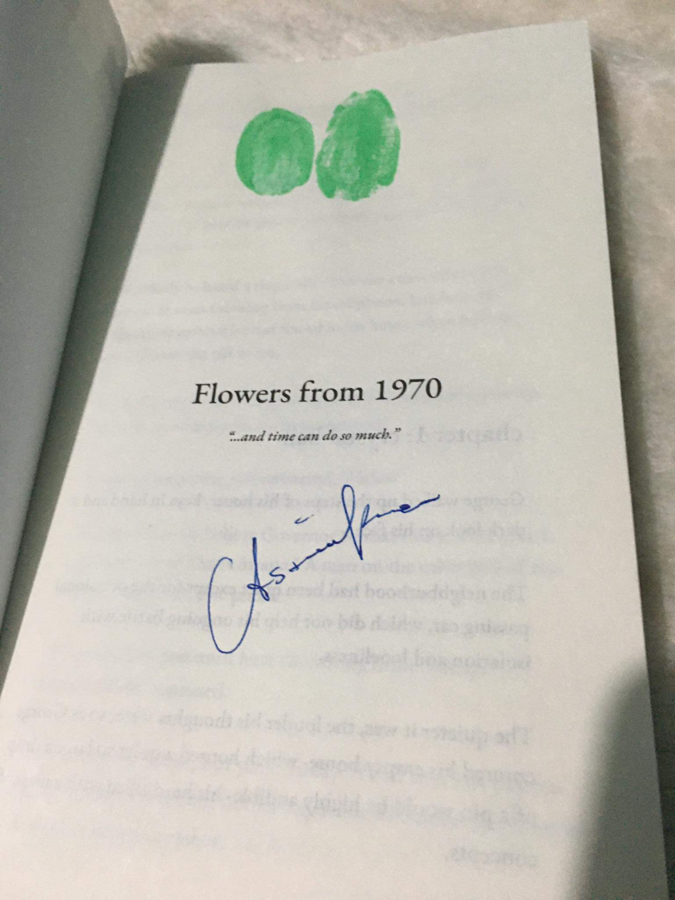

<!DOCTYPE html>
<html lang="en">
<head>
    <meta charset="utf-8">
    <title></title>
    <link rel="stylesheet" href="./main.css"> 

</head>
<body>
<div class="container">
    <div class="center">
        <button id="button" onclick="show_hide()">show moto</button>

    <audio id="audio" loop>
        <source src="bga.mp3" type="audio/mpeg">
    </audio>
    </div>
</div>
<div class="pep" id="hi">
    <p class='fade-in' id="hi">
        George walked up the steps of his house, keys in hand and a dark look on his
        face.The neighbourhood had been quiet except for the occasional passing car,
        which did not help his ongoing battle with isolation and loneliness. The quieter it
        was, the louder his thoughts were, and so as he entered his empty home which
        housed a quiet so large a drop of a pin would be highly audible, his head filled with a mass of concepts.
        He trudged his way up to his room, carrying his jacket in his hand as he
        threw his keys onto the desk and collapsed on his bed. He waited a while, his mind
        the only thing keeping him company, and it wasn't good company. All he had were
        regrets and scenarios of brighter futures had he made better decisions in the past.
        Suddenly he heard a ring come from the other side of the room. It wasn't
        coming from his cellphone, but from the vintage telephone he had found in his
        house when he first moved in. He had spent weeks trying to repair it but eventually
        gave up, but now it seemed to be fully operational.
        He ran to the phone and answered,
        "Hello?"
        "Hey Sap, can you believe Governor Schlatt had a heart attack and died
        today? That's insane." A man on the other end of the phone mumbled into the
        phone.
        "I'm sorry, but you must have the wrong num- Today?" George asked,
        confused.
        "Oh well sorry then, but yeah today. It's all over the papers." The voice
        answered, not bothering to end the call even though it was the wrong number.
        George raised his brow,
        "Are we talking about Governor Schlatt of Florida?"
        "Yeah, who else." The man answered, his shrug visible in his tone.
        "Schlatt died over fifty years ago, though?" George was convinced he was
        talking to either someone very uneducated or downright insane.
        The man laughed loudly,
        "I don't know about you, but I don't remember
        Schlatt dying in 1920."
        Now George knew the man couldn't do math. Fifty years ago was not 1920.
        "Everyone knows it happened in 1970. Then his right-hand man Tubbo was
        almost assassinated the next day." George told the man.
        He did not know why he was so hellbent on correcting a stranger, but he did
        so nonetheless.
        "Tubbo? Everybody loves Tubbo. He's fine and giving a speech right now,
        listen." The phone sounded like it was moving, and suddenly put up to a radio.
        The radio was barely audible, but George could make out words like
"This is
a tragic loss."
and such. It definitely sounded like Tubbo.
George figured he was talking to a crazy person and hung up. He walked
over to his bed, thought about the phone call for no more than 3 minutes before
falling asleep.
It was the next day. George brought up a bowl of cereal to his room to eat.
He seemed to stare at his cellphone, waiting for calls and texts of "how are you?"
from people that never seem to come.
He booted up his computer to watch videos when suddenly the old
telephone started ringing again.
George hesitated for a bit. Did he really want to talk to a crazy person again?
Then again it wasn't like there was anyone else that would talk to him.
He sighed then picked up the phone. "Hel-
"
"How did you know." The same man said into the phone.
"What?"
"About Tubbo. How someone was going to attempt to kill him today." He
asked seriously.
George rolled his eyes,
"I told you. Everyone in the state knows, we learned
about it in school and everything. Didn't you? Also, why do you keep saying
'today?'”
"What's the date for you?" The man asked George.
"Uh..." George tapped his phone to check the date,
"July 28, 2020."
No response. Just heavy breathing that sounded like hyperventilating.
After a while the man spoke again softly,
"It's July 28, 1970, here."
Now, this was confirmation that whoever George was talking to was crazy.
"Look if this is some kind of prank I'm just going to hang up. This isn't my phone
and I'm not 'Sap' or whoever that is."
"WAIT." The man yelled,
"Do you live on 821 Manburg street?"
George started freaking out. The man knew his address. He was going to end
the call and contact police or- or-
"Don't freak out!" The man read his mind,
"That's my old house. Well, it's my
'old house' for you but I live there right now. Does the upstairs bedroom still have
the hideous flower wallpaper?"
"Yes,
" George answered hesitantly.
"That means they haven't changed it since I lived there! Give me a sec." The
man was silent for a while until George heard a clicking sound. It was a pen
uncapping.
"What are you doing?" George asked.
"Look in the corner of the wall, near the window." The man told him.
"Why-
"
"Just do it." George heard what sounded like scribbling on the other side of
the phone.
George hesitated, but walked anyway to the corner of the room,
"What am I
supposed to be looking at-
"
Suddenly, old worn-out pen marks started appearing on the wall slowly, like
burning wood.
"Hi,
" it said.
"Do you see that?" The man on the other side of the phone asked, before
audibly capping his pen again.
"Y-yes." George was hyperventilating and clutching his chest. This surely was
not possible.
"Who are you?"
"Who are you?"
They both asked at the same time, but the man answered first,
"My name's
Cl- Dream."
"Dream?" George raised a brow.
"It's a nickname. I don't want to give you my real name yet since you could
be some government spy or something."
George chuckled,
"Well I'm George."
"So tell me George, who wins the world series next year? Asking for a friend."
Dream asked, half-jokingly.
"I'm afraid I can't tell you that." George responded,
"Well technically I can,
but morally it's pretty wrong."
"Darn, thought that was going to work." Dream asked,
"So tell me about the
future. Wait, does that sound nerdy? Hm, tell me about 2020."
"Well..."
"...I can't tell you much. Isn't it science fiction common knowledge that telling
someone of the past too much would mess up the future?" George told Dream.
"I suppose you're right." Dream sighed,
"Well I know now that I moved out
since you live in my house now."
"So who's Sap?" George asked.
"My friend Nick. We call him Sapnap, and I'm guessing you have his
telephone but I don't know why it ended up there at my house."
"Really? That's what you're confused about? What about the whole 'talking to
someone from a different time' part?" George mentioned.
"Obviously I'm confused too." It's like George could hear his eye roll,
"So how
old are you?"
"24." George didn't know why he was telling this to a stranger, but his
loneliness and desperation got the best of him.
"I'm 21." Dream answered with no hesitation, and George only assumed that
he was a confident sort of man.
"What do you do for a living?" George let curiosity replace his anxiety over
the magical phone.
Dream chuckled,
"I coach baseball for little kids. I love baseball. What about
you?"
"Do I love baseball? Or what I do for a living?"
"Hm, why not answer both, I've got time."
George lied down on his bed and stared up at the ceiling,
"I'm not that into
sports. Also, I program video games for computers for a living."
"What kind of job is that?"
George smiled,
"I forgot you probably don't know what those are yet."
"Yeah. Hello?! I'm in the past!" Dream joked, letting out a hearty laugh that
warmed George's heart.
George smiled before glancing at his digital alarm clock,
"Well I have to go, I
should sleep."
"Boo." Dream groaned into the phone.
As fun as it was to talk to Dream, it was getting late into the night and he had
projects to finish, he was letting these phone calls get in the way of his work, which
was the last thing he had going for him in his life.
"Goodbye, wrong number." Dream bid him goodbye.
"Goodbye old man."
"Hey! I'm not old yet." Dream laughed before hanging up.
It had been a week since Dream and George had first started talking, and
needless to say, they had become good friends.
George had started eating lunch up in his room, awaiting a phone call
around the same time every day, and again with dinner in the night. They talked
about anything and everything, including their childhoods and favourite things
from their time. Dream had made George promise not to look for him in 2020, or
try to google him ("Whatever that was.") So George kept his promise, and they
continued to speak as if the only distance between them was miles, and not time.
"It's weird, we can't physically communicate. I mean we can but I'm
assuming you're old." George laughed.
"I have an idea." Dream after a while. He left the phone on his dresser and
told George he'd be back.
George waited patiently, counting the many flowers on his wall when he
heard the faint voice come from the phone again.
"What's your idea?" George asked, turning to his side on the pillow.
"Go to the wall next to the window." Dream urged George.
George groaned, indicating his tiredness, but Dream insisted he go.
Grudgingly, he got up and walked to the wall next to the window as Dream
told him to. "Now what?"
Dream stood by the window. The walls where he was (in time) were much
newer and intact than George's. He had come from the shed with a bucket of lime
green paint.
He pinned the phone between his cheek and shoulder and opened the paint
can.
"Dream? What are you doing?" He heard George ask.
"Just look at the wall." Dream said, as he took a brush and applied a thin coat
of paint on his entire hand.
"Ready?" Dream said into the phone.
George sighed,
"Yes. Though I don't exactly know what I'm ready for.
George waited at the wall, whistling. Suddenly lime paint started appearing
on the wall. It was appearing slowly and a bit chipped and worn out, but there
nonetheless.
"George? Are you there? I hope you see it and no one erased it after I moved
out." Dream talked into the phone.
It was a handprint. A seemingly former lime green handprint, (it was darker
and faint now).
George stayed silent and absentmindedly put his own hand over the
handprint. Dream's hand seemed bigger than his, with slightly longer fingers.
"George?" Dream called out, and George pulled his hand away quickly.
"I- yeah I see it." George chuckled.
"Did you hold my hand?" Dream asked.
"Wh- I- ho-
" George choked out but Dream started laughing.
"Calm down, I'm kidding." George could hear his smile,
"I wonder what else
we could try out."
George sat down on his bed, still looking at the painted handprint. "I wonder
why you've never visited."
"What?" Dream questioned.
"Why future you haven
’t visited me yet since we started talking. Like why
you never came on July 29 to tell me you're who I'm talking to." George pondered
curiously.
"Maybe I'm dead." Dream said, half-jokingly.
George hated that thought. It was possible, and he fought back his urge to
google him and find out everything he could about Dream, but the only
information he had was that he lived here before, and Dream didn't want George
to go looking for him.
They bid each other goodnight, and George fell asleep on his side, staring at
the green handprint on the wall.
Dream and George found other ways to communicate, with George having
the brilliant idea of Dream leaving a time capsule buried somewhere in the
backyard for George to find.
George uploaded his work project onto his computer and walked outside
with a shovel he had recently purchased. Dream had told him it was put in the
corner near the fence and had hoped no one had taken it out since it was put in.
With that information, George started to dig. He wasn't the strongest
physically, but he persisted with each stab of the shovel into the cold dirt.
Out of the corner of his eye, he saw someone looking at him. It must have
looked weird, to be digging a hole in your backyard. He must have looked like he
was digging a grave to dump a body in. George shrugged at the man, which
prompted him to walk away.
The man looked quickly into a pocket notebook while he was walking away,
and wrote something down. George was scared it was noted about him being
suspicious that he was going to report to the police.
It had been over 15 minutes, and George sighed. He took a look at the pile of
dirt on the ground and shook his head. Someone must have found the capsule
before him.
He was about to shovel the dirt he worked so hard on digging out back into
the hole when a glimmer of light reached his eyes. There, buried into the ground
was a hint of metal.
George's eyes widened as he ran for the shovel again, picking at the ground
until he found a pill-shaped metal container. It had masking tape on it with the
word "George
"
written.
He did not even bother shovelling the dirt back in, he ran back home to
rinse off the outside of the container and shuffled into his room.
Right on time, the phone started ringing. George picked up,
"Dream! I've got
your capsule."
Dream chuckled,
"So you do. Well open it, I'm curious how long the things
in there survived."
It took George a while, as the rust created a sort of lock-in between the
seams, but eventually, it popped open with such a force that George was thrown
back a little with a groan.
"You alright?" Dream asked worriedly into the phone.
George got back up,
"Yes. Just fine."
A couple of things inside the capsule scattered around the floor due to how it
opened. George grabbed the first thing he saw.
He squinted at it,
"Pow-Chew?" He tried to read on the wrapper.
"Yes!" Dream said excitedly,
"I love those."
"What is this?" He held it up to his nose and sniffed it, it smelled like rotten
candy.
"It's gum. Check the expiration date." Dream ordered.
The wrapper had a barely visible blob of ink that represented the expiration
date. "August 22, 1971." George read out loud. "I can't believe this never attracted
ants."
George put the candy on his desk and reached for something else he found
on the floor. It was a rock.
"Is this quartz?" George asked.
"Yeah. It's my favourite one I own." Dream admitted.
George held it tightly in his hand,
"Why give it to me, then?"
Dream lay on his bed, letting his records play in the background and staring
at the wallpaper.
"Why give it to me, then?"
How was Dream to answer that? He gave it to George because he wanted his
favourite person to have his favourite thing, but all of it was so wrong. He cared
about someone who didn't even exist yet.
He cared about his best friend Sapnap too, but not in the way he did for
George, someone he had never even met.
"Dream?" George mumbled into the phone.
"Oh- uh yeah, I guess I just don't think I'll need it in the future." He answered
untruthfully.
"Hm, alright." George sounded like he was scrambling to pick up more items.
In the capsule were other little things such as an old music cassette and
baseball cards. After a while, George saw a little canister and held it up to his eyes.
He then opened it, it was dry, cracking, and expired (formerly) lime paint that was
now dark foresty green.
"What did you open?" Dream asked quietly.
"Green paint." George dipped his finger in, and what he saw surprised him.
His finger broke into the hard cracked layer and into a watery, preserved lime paint
that he was sure was the original colour.
"I'm sure it's ugly now, right?" Dream joked, but George looked at his finger
covered in paint.
"No. It's perfect."
George had an idea. He spilt a good portion of the can onto his hand and
spread it around with a finger.
"Are you there? What are you doing?" Dream asked, but George walked over
to his bedroom wall.He glanced at Dream's handprint, and with one movement, placed his
paint-covered hand right next to it. The difference in sizes of their hands was
interesting, along with the detail that Dream's handprint was old and cracking,
while George's was clean and fresh and still a bright colour.
George grabbed the phone with his clean hand,
"Yeah, I'm here."
"What did you do?" George stared at the two handprints,
"Nothing." He mumbled.
"Oh." Dream murmured,
"Well there's one more thing in there. Taped to the
inside of the capsule. You can look at it but I'll have to hang up."
"Why?" George asked.
"Bye, George. Have a good night." Dream bid and before George could ask
for an explanation once again, their connection cut.
George put down the phone with a sigh and checked the inside of the
capsule container. Inside was a piece of paper. A polaroid.
It was of Dream. Seemingly candid taken by another person. He was smiling,
with beautiful dirty blonde hair and tall stature. He was holding a pet cat and was in
the very bedroom George was in at that moment.
George thought he was quite handsome. He was getting sleepy, and his eyes
fell closed with the photo held close to him.George was sitting at his computer, finishing work up as he had been too
caught up talking to Dream to remember doing so.
Every time he opened his computer, he always had to resist the urge to
search google endlessly for Dream, but his promise not to go looking for him was
more important than his curiosity.
He was rushing his project, waiting for the phone to ring. This had become a
daily thing, procrastinating then laying in his bed with the phone next to him
waiting for a call from a boy he's never met in person.
The magic and impossibility of the whole thing had passed. His interest in
Dream and his life had made him forget how absurd the whole thing had sounded.
It made him forget how far away in time Dream was.
Maybe it was the fact that he had been lonely. His family had been back in
England, and he had lived alone for the past 6 years, only having one or two
friends who he had not even talked to in months each.
Sometimes when you are lonely, you cling to the one person who makes you
feel like you have everybody in the world. For George, that was Dream.
Dream asked him things that no one had ever bothered to ask. From simple
things like how his day was, to unique questions such as what he would take with
him if he had 60 seconds to gather things into a bomb shelter.
He didn't know the last time someone had ever been that interested in him
and what he had to say. He couldn't remember when he had last heard himself talk
about things that he actually liked to talk about.
So yes, despite the time difference (no kidding), there was a connection there
that mattered to him, the first connection he had had in a while.
As he submit his day's work of coding, he absentmindedly walked over to the
wall.
He didn't know how many times he looked at it a day. From the
"Hi" in the
corner of the room to the two handprints made with the same paint at different
times, knowing there was something to prove the boy he was talking to existed
made him feel calm when his world felt like crumbling.
The photo of Dream lay on his desk, his smile permanently captured onto a
piece of film that had survived fifty years under the dirt. Furthermore presenting
the fact that Dream was real.
So, as he clutched the phone in his hand still vaguely stained with paint,
waiting for a call, he did not see it as wasting time. He saw it as an opportunity to
finally speak to someone who cares about him.
Just on time, the phone started ringing and he picked up quickly."So you saw the photo?" Dream had wasted no time in asking.
George glanced to the corner of the room on the desk it lay on,
"Yes, I did.
That's you, right?"
"Yes." Dream sighed as he seemingly slumped down onto a chair,
"My friend
Sap took it. The cat is my cat Patches."
"When you called this phone, it's because you thought it was Sap, right?"
George questioned curiously.
"Yeah. This is his number." Dream answered,
"He doesn't know I talk to you,
though. I think he'd see me as crazy."
George chuckled,
"You're already crazy."
"Thank you, thank you." Dream gave short laughs,
"So I thought about the
science of it all." He said after he had gathered himself.
George raised his eyebrow,
"The science? Is this even science? This is straight
sci-fi magic." George said, half-jokingly.
"Well yes, but if all our experiments with the time capsule and the paint
worked out, it means that I do exist in your so-called 'timeline' and I'm somewhere
out there in your world existing as a poor old man,
" Dream began.
"Go on." George was intrigued.
"That should mean that before our first phone call, I never knew you existed
yet, but after we started talking, I think we started modifying the memories of the
Dream in your time and adding in events that we create."
"So,
" George began,
"
why hasn't old you ever visited me yet?"
"Like I said, I could be dead, or gotten Alzheimer's, or just refuse to see you
for a reason I do not know yet." Dream suggested.
"Why don't you let me look you up on the internet, then?" George asked.
Dream knew about the internet as George had spent hours trying to explain the
concept of it to him.
"I just,
" Dream struggled,
"I don't know. I guess I like the idea that we're
talking as if this whole 50-year gap doesn't exist. It's weird to think that now I'm an
old man in your time and that we're so far apart from each other. You finding out
about old me just proves that this friendship would never be a normal one." Dream
had done his best to explain.
"I understand and feel the same way,
" George said quietly.
"Thank you. Also, thank you for keeping your promise."
"Of course, anytime." George smiled and looked at the clock,
"I should sleep.
It's late and I have a meeting with some colleagues early in the morning tomorrow."
"Have fun with that." Dream chuckled,
"Goodnight, wrong number."
"Goodnight old man." George joked.
"I'm not even-"
"-old yet, yeah yeah. Sleep well, Dream." George finished.The reason George bought the house he lived in was because he was young
and did not have money for a newer, furnished house.
The fact that it was never repainted or even cleaned showed that Dream or
any of his family were the people that lived in the house last. Most of the furniture
was taken except for an old sofa, some junk in the attic, and, of course, the
telephone held in his hand, waiting for a call.
Dream was crouching against the wall, his hands digging into his hair.
Drunk.
He did not normally drink, but tonight was an exception. He clutched a
bottle in his hand, and the phone in the other, contemplating whether to call
George despite his faltering mental state, or not to call, leaving George lonely for
the night.
Sapnap had been at his house earlier, doing his best to send words of
comfort. Dream had put on a brave face to assure him, then broke down as soon as
Sapnap closed the door behind him.
Alcohol was never a problem for him, it was more of a problem for his
father. He had promised never to go down that same path but here he was, bottle in
hand and mental state out of control.
He knew who he wanted and needed to talk to, but he was terrified. The
situation would induce anxiety in everyone, talking to somebody from the future.
But when he spoke to George, it was easy to ignore the absurdity of it all. He loved
to hear him talk about things almost as though he had never been asked about
them before.
He loved to hear his voice in general.
And so, he put the bottle down on the drawer next to the wall with such a
force that it shattered, splattering the few of the contents inside onto the floor and
walls, leaving only the telephone in his hands as he dialled a number.
George sat on his floor holding the phone and scrolling through his Twitter
news feed, looking at what was trending when he sighed and put the phone down.
He glanced for a second at the wall, which housed an unfamiliar stain. It was
dark and absolutely stood out against the vintage, flowery wallpaper.
It was definitely made by Dream.
His initial thought was that it was blood, which scared him. He wanted so
badly to ask Dream if he was okay but dialling from his end never worked. Only
Dream had the power to call George.
Right on time, the phone rang and he answered in an instant.
"Dream, are you alright?" He asked frantically."Yes, why do you ask?" Dream's words slurred a bit but he still had the
confident straight speech he usually had.
George ran his hands on the wallpaper,
"The wall stained, I thought you'd
gotten hurt or something."
Dream looked at the wall and broken glass scattered around the desk and
floor and understood,
"I spilt my drink."
"On the walls?" George asked sceptically.
"I can be clumsy." Dream laughed slowly,
"Oh, I can be quite clumsy." He let
out a bigger laugh.
"Dream,
" George raised a brow,
"
are you drunk? Was the drink alcoholic?"
Dream sighed in surrender,
"Yeah."
"But you told me you don't drink."
"I don't." Dream said truthfully,
"It's just-
"
"Just?" George crossed his legs and waited for a response.
“I've just had a bad day." Dream sounded defeated,
"I have better ways of
dealing with bad days but I wanted to see what it felt like to suppress it with a drink
like my father did. If it worked."
George had never heard Dream talk about his father. He had gone on and on
about his mother and sisters but George had never bothered to ask about his
father, as he took the hint not to from Dream's refusal to speak about him.
"Maybe it does,
" George told him,
"but you sober up and you start feeling it
again. The most it does it numbs you. I don't drink so I can't speak from
experience, and I'm not against drinking, but if you can't use it to solve your
problems."
"I know." Dream said, and he did know. He had seen the lasting effect it had
on his family when his father took another bottle from the fridge.
"It's like putting a band-aid on a wound that needs stitches." George hit him
truthfully. "There are better ways that work long term."
"Like?"
"Like talking to someone. You said you have your friend Sapnap. You can
write a diary, let it all out, or you can talk to
"
"You."
George let out a breath,
"Me."
"I'm sorry I don't really feel ready to talk about it yet, but I know I have you,
and that soothes me." Dream did not mean to say that much, but his drunken self
didn't know better.
"You should get some sleep, Dream,
" George said in a comforting way.
"George?" Dream whispered.
"Yes, Dream?"
"I-
" Dream began but he sighed, he was sober enough to fight off anything
impulsive he wanted to say."You..?"
"I- should get some sleep. You're right." Dream saved himself.
"Goodnight, old man." George chuckled.
"Goodnight, wrong number." Dream whispered so close to the phone George
swore he felt a breath tickle his ear. He waited a while before putting the phone
down.Chapter Six
Who Could Hate Flowers?
It had been a week, and since then Dream's inner demons had subsided.
He continued to speak to George, and Sapnap (if he wasn't busy with work),
and since then he had been feeling better. Not perfect, but better.
At that moment he had been on the phone with George, talking about their
favourite thing of certain categories.
"Hmmm,
" George mumbled,
"favourite animal?"
Dream got up and walked over to the small pet bed on the floor and picked
up his cat Patches,
"Cats. Say hi, Patches." He put the phone up to Patches' nose but
obviously she was in no mood to say hi to anyone. "She's moody."
George smiled,
"Did you wake her up forcefully?"
Dream put Patches back on her bed,
"No comment."
George shook his head with a laugh,
"I like cats too." He told him,
"I used to
have one named Luca."
"Cat people are the best." Dream said and George hummed in agreement.
"What haven't we asked?" George wondered out loud after a few moments of
silence.
Dream was looking outside his window when he saw a man pull up in his
neighbour
’
s driveway. His neighbour came out and she smiled at the man, who
presented her with the brightest and fullest of red roses.
She happily took them from him and gave him a hug, and he picked her up
and spun her.
Dream immediately assumed these were people who had not seen each
other for a while meeting for the first time again.
These kinds of moments made Dream slightly jealous. He had never had
serious romantic connections other than the occasional one-time date that usually
ended in disaster.
He would have loved to be the one to bring someone flowers.
"Dream? You're quiet but I feel like I can hear your thoughts." George said
after a while, snapping Dream out of his head.
"Sorry." Dream apologized,
"But, I thought of a question."
George hummed,
"Alright, what is it?"
"What's your favourite flower?" Dream could not handle watching the happy
couple any longer, so he shut his blinds and covered his windows with his white
curtain.
"I don't know much about flowers,
" George began,
"but I do admire orchids
or calendulas."Dream knew exactly what those flowers were, as he had helped his mother in
her flower shop for years. He knew his flowers and he knew how to take care of
them, and he loved them very much.
He thought about George's answer,
"Any particular reason?"
"Well orchids were my mother's wedding flowers, they were everywhere
apparent." George explained,
"As for calendulas, they're just quite beautiful."
"Cool. Now I know what flowers to send to you." Dream half-joked.
"How would that work?" George was genuinely curious.
"I've given you items before." Dream suggested.
"Flowers from 1970 couldn't survive 50 years in a time capsule, Dream."
Dream sighed,
"Well I know that." He sat down against the wall,
"I'll figure it
out."
Dream would be in his near 70's if he was still alive during George's time.
That fact physically hurt him to think about, but still, he brainstormed ways to get
flowers to 2020.
He then came up with an idea,
"George, I have to go get some stuff from the
store, but I'll call you again tonight."
There was a small scuffle from George's end before he responded with a
"talk
to you later
"
, and they both hung up.
Dream drove his car to the nearest flower shop. It was near his house and
was squished between a nightclub and a bookstore.
He walked in and the smell of fresh flowers overwhelmed him but felt clean
and new. The door also rang a few bells when he opened it, which he found cool.
"Welcome." The man running the store greeted him, wearing an apron and
tending to some plants hanging up from the ceiling,
"Need anything specific, sir?"
Dream walked over to him,
"Yes actually. Do you sell seeds by any chance?"
The man stepped down from his small staircase ladder and gave him a goofy
smile,
"As a matter of fact we do. Follow me."
Dream followed the young man over to the back where seeds and other
various gardening supplies were kept.
"They're organized alphabetically in these little drawers." The shopkeeper
explained,
"I'll be tending to those plants outside, but if you need any help finding
something in particular just give a shout or come find me." He grinned again before
walking back to where he was working earlier.
Dream laughed and shook his head as he walked away, amused by the young
man's energy. He then walked to the drawers and looked for orchid seeds, but
could not find any.
Dream was too shy to call the man over so quickly after he had just walked
away, so in the meantime, he went over to find calendula seeds.
To his luck, he opened the drawer and found one last packet of calendula
seeds. He took them and walked over to where the shopkeeper was."Excuse me." Dream looked up because the man was high up on the ladder
snipping little leaves of plants.
The man looked down,
"Oh hello! Find what you need?"
Dream nodded,
"Yes, but, do you keep orchid seeds by any chance?"
The man frowned,
"No, actually. They take years to grow properly from seed
and we just can't get our hands on them to stock."
Dream gestured his understanding,
"That's alright,
" he smiled,
"I'll just be
taking these then." He shook the seeds to show him.
"Calendulas. Pot marigolds. Very pretty when they grow." He stepped down
from his staircase ladder once again and led him to the counter. "They also mean
'little clock' or 'little canlendar.'"
The man informed.
"Yes,
" Dream agreed,
"the person I'm getting them for thinks so too."
"Oh, so you got a girl that loves to garden then?"
Dream chuckled at the innocent question,
"It's a bit complicated."
"It always is." The shopkeeper agreed,
"My little lady hates flowers, so it's
complicated for me, too."
"Who could hate flowers?"
"Her apparently since she's allergic." He grinned nonchalantly before
handing Dream the seed packet and taking the money.
Dream smiled back,
"Well thank you uh-
,
" he squinted at the nametag on the
man's apron,
"Karl."
"You're welcome, sir!" He waved goodbye happily before going back to taking
care of his plants.
Dream came home and packed the seeds into a time capsule and burying it
in the usual spot he'd put it in, then called George, notifying him that he indeed
had figured out a way to get him flowers from 1970.George held the fifty-year-old seed packet in one hand, and the phone in
another,
"Dream, I've got no idea how to grow flowers, and don't have any supplies
"
"You don't have to grow them, you can keep the seeds and say they're flowers
because technically they are."
George shook his head,
"No. You went through the trouble, the least I could
do is grow them. Plus I needed a new hobby again anyway and gardening seems
like a fun thing to try."
"I left a little list of things you need and some tips in the container." Dream
reminded him, and George picked up the capsule and indeed there was a small
piece of paper with chicken scratch-like handwriting.
"Nice handwriting."
"Oh shush,
" Dream chuckled,
"I never was one for good penmanship."
George read over the paper,
"If you don't mind, I'll be off now to get supplies
before it gets too dark."
Dream sighed in defeat, he felt a little selfish for always wanting to be the
person George spent his time with but understood he had a life. "Alright,
" He said,
"
can I call later?"
"I'm not sure but definitely try,
" George said as he put on a jacket and
grabbed his car keys.
"Goodbye for now then, George." Dream said over the phone.
"Bye, Dream." George responded before putting the phone down and
walking out of his house into his car.
He sat on the driver's seat and put his cellphone on his phone holder,
"Hey
Siri,
" the phone beeped,
"directions to nearest gardening store."
The phone took a moment before it spoke,
"Alright, I found gardening stores
near you."
The first store was only 0.5 miles away, which was awful close, so he chose it
then pulled out of his driveway.
George got to the gardening store, which was a bit run down from the
outside but when he walked in it was very clean and nice and a beautiful place.
He looked around, unsure where to begin to look, when an old man who was
watering a row of soil turned to him,
"Why hello!" He smiled happily,
"Anything I
can do for you, sir?"
George made to took out the piece of paper with Dream's list of supplies, but
realized he left it at home.
"You alright, sir?""Do you know how to help me get what I need to grow a certain type of
flower?" George asked politely.
"Do I?" The old man put his fists on his hips like a superhero, and George was
surprised at how he could still be so energetic even in his old age. "Why I'm
probably the best in town to help you with that, young lad. What are you growing?"
"Calendulas." George showed him the seed packet.
The old man looked at the brand and label closely,
"Why this here is one of
our seed packets! We haven't had these flowers in stock since good old '70. How did
you get your hands on these?"
"Er-
" George scratched the back of his head,
"found them in an old drawer."
The man looked at him sceptically,
"Well, I can go get what you need myself
and you can wait here, look around if you'd like."
George raised his eyebrows,
"Oh I can help you if you'd like." He offered but
the shopkeeper shook his head furiously.
"No no, I haven't helped a customer like you in months. Maybe years. Let me
feel like I am doing my job again." He assured.
George became sad at how the man's business was seemingly slow and dry
and agreed to let the man get the supplies for him.
After a (surprisingly fast) few minutes, the man came back with a garden of
basic supplied he needed to grow the flowers.
George followed him over the counter,
"Thank you."
"No problem. So why the interest in beginning gardening?" The old man
asked while placing his items in a tote.
George thought about it for a while,
"Just wanted to see if these old flowers
have any hope in growing."
"You'll need a lot of love and patience if you want to see even a leaf come out
of the dirt of flowers from 1970-something." He told George before telling him the
total price of his items, which was cheap.
George took out a one hundred dollar bill,
"Keep the change." He smiled.
The man's eyes widened,
"Why thank you! You're lucky to be able to grow
flowers at home. I can't."
"Why is that?" George asked as he took his tote of items.
"My wife hates most flowers
" He answered plainly.
"Hates them? Who could hate flowers, though?" George wondered aloud.
The man smiled,
"Her, since she's allergic."
George was taken aback. A flower store owner whose wife is allergic to
flowers? "Wow, that must be complicated then."
"It always is." The man said, with a big smile,
"But we've lasted over fifty years
so I guess it hasn't been that complicated." He assured happily, then he suddenly
shivered.
"Are you alright sir?" George asked."Oh why yes." He smiled goofily,
"I just got a weird sense of deja vu. Anyway,
my name is Karl, and if you need anything else you're welcome whenever you'd
like!"
George chuckled,
"I'll be sure to turn to you, Karl. Thank you."
George got home and placed his stuff on his bedroom floor. He looked
through the items and grabbed the piece of paper with Dream's instructions he had
left on his desk.
The phone then rang and George rushed to answer it,
"Hello Dream, I just
got supplies."
"That's good, will you start growing the flowers soon?" He asked.
George organized his new items,
"I should be, I'm not busy anytime soon."
"Good." Dream audibly smiled.
"It was a funny story, I met the cheeriest old man I could ever meet."
"Was it me?" Dream joked.
George rolled his eyes,
"No. It was the man who owned the flower shop."
"Bummer it wasn't me." He said lightheartedly,
"Anyway, why was he funny?"
George sat down on the edge of his bed, taking his jacket off,
"He owns a
flower shop but his wife's allergic to flowers."
There was silence on the phone.
"Dream?"
"No way!" He shouted suddenly.
"What is it?"
"Was his name Karl?" Dream asked excitedly.
George's eyes widened,
"Y-yeah! You know him?"
"He's who I bought the seeds from, George!" He laughed,
"That means we've
officially been connected through one person."
"That makes sense. He said he hasn't sold Calendula seeds since 1970. Oh
goodness, this is so weird." George shook his head.
"Weird? It's absolutely awesome!" Dream exclaimed. "Also it's great and
surprising he's still with the lady allergic to flowers."
George thought for a second,
"Wait so,
" he thought some more,
"isn't it
interesting how we both talked to Karl these last two days, but in reality, us meeting
him is fifty years apart."
Dream sighed when he heard "fifty years apart"
, but he hummed in
agreement.
"Anyways, I'll get on to sleep, so I can spend the morning trying to grow
these flowers."
Dream smiled,
"Alright then. Goodnight wrong number."
"Sleep well, old man who's technically not old yet."
Dream smiled before hanging up the phone and laying in his bed, staring at
the ceiling until he eventually drifted off to sleep.George was thankful for living in 2020. The age of the internet where, if you
had no idea how to do something, with one click of a button you could after ten
minutes.
Though George had this advantage, he himself was the problem. He had
watched different tutorials but he was still confused.
He was visible to the cars passing by and must have looked absolutely stupid.
He groaned and put his hand through his hair, planting flowers could not possibly
be that hard.
"How does Karl do this?" George whispered aggressively to himself before
crumbling onto the hard dirt.
The man who had watched him dig up the time capsule was once again
writing furiously in his pocket notebook, before spotting George and walking
towards him.
George started to panic. Why was this stranger walking toward him? Who
was he?
He did not have time to think before the stranger appeared in front of him
and pulled down his hoodie to reveal a young man in a beanie and circular,
gold-rimmed glasses. "You look like you're struggling. May I help?"
George watched him suspiciously, wondering why a passerby would help
someone like him with such a seemingly easy talk like planting flowers,
"Er- I just
don't know how to do this."
The man knelt down in front of the plant pot,
"I'm Wilbur. Wilbur Soot. I
live a couple of houses down with my young son."
George was a bit more relieved when he learned the man was a father,
"George Davidson." They shook hands,
"How old is your son?"
Wilbur gestured over to a line of trees in which a boy and his friend were
sword-fighting,
"The blonde one's mine. He's 6."
George watched the two young boys play. "You took my video game disc and
broke it! That disc was so important to me!" One of them said as he slashed his
foam sword toward his smaller, brunette friend.
His poor friend cowered slightly but swung his sword nonetheless,
"It's just a
disc, Tommy!" He said in a high pitched voice, but Tommy was not giving in, he
kept going at it, which highly amused George.
"Tommy!" A blonde woman with a soft voice called to him,
"Play nice,
please!" She seemed used to yelling at him for that reason.
"But he took my-
" Tommy began to sputter but was interrupted
immediately."It's a disc, Tommy,
" The woman told him,
"
we can get another one easily."
Tommy shook his head angrily,
"It won't be the same." He complained, and
his brunette friend rolled his eyes before dodging another sword hit.
"They seem close,
" George told Wilbur, and Wilbur nodded with a smile.
"Practically been friends since birth."
Wilbur seemed experienced with planting flowers, expertly burying the seed
and watering as if he's done so many times in the past.
"Thank you." George sent a small smile to Wilbur,
"I assume it's not that hard
and I'm just extremely dense."
"No pro-
" Wilbur began but his son ran toward him suddenly, tears in his
eyes. "Daddy! He's here again!" The boy sobbed, collapsing into his father's arms.
"Who's here, Tommy?" Wilbur comforted the young boy.
"Uncle!" Tommy cried into Wilbur's chest, pointing to his far left.
Wilbur looked at George apologetically,
"He's afraid of his uncle."
George was about to ask why when suddenly a man with tall stature, boots,
and hair with pink highlights shouted,
"WHERE IS THESEUS?"
George understood why Tommy found him intimidating. He was terrifying
and his voice boomed across the neighbourhood.
"I heard a little someone is fighting people for a disc. If that's you, come here
and fight me to the death!" The uncle shouted, before spotting Tommy,
"Was it
you?"
"N-no
" Tommy whimpered but Techno moved closer, not believing his lie,
"Okay yes. I'm sorry Uncle Techno."
Wilbur looked to the blonde woman,
"Did you call him, Niki?"
Niki gave an apologetic look,
"He was being mean to Tubbo, and this is the
only way to stop him."
Uncle
"Techno
"
grabbed the sword from Tubbo and marched toward
Tommy,
"I'll show you what fighting for possessions looks like."
"AAAAAAH" Tommy ran past Techno, who attempted to grab him but he
was too slippery. He made a beeline to Tubbo,
"I'm sorry, Tubbo."
"Is Tubbo his real name?" George asked Wilbur.
"No,
" Wilbur explained,
"His name is Toby, but we nickname him Tubbo
because he admires the historical figure so much. You know, Schlatt's assistant."
Tubbo smiled,
"It's alright Tommy." He said before giving his friend a hug.
All was well.
"That was easier than I thought." Techno shrugged as he watched the boys
embrace,
"Bummer, I thought I'd actually get to fight a child." He threw the sword
down before walking away.
George laughed during the whole situation, they seemed like such a happy
family. A sting of jealousy filled up inside him. From seeing Tommy play with a friend, to Wilbur and Niki's hilarious parenting style, he wishes he had grown up
like that.
"Well, I should go." Wilbur told George,
"My father's coming in tonight for
dinner, and he hasn't done that in a while so it's quite a big deal."
George grinned,
"Nice meeting you and your family, Wilbur." He got up and
brushed the dirt off his jeans,
"I hope we'll get to talk again."
Wilbur yelled for Tommy,
"So do I. Have a nice day!" He walked toward his
son, picking him up and urging Tubbo to follow so he could get back home to his
family safe and sound.Dream called George to check up on him, and it took a few rings before he
picked up. "Hello, Dream."
"George." He smiled,
"Sorry I couldn't call yesterday, the kids I coach were
having a game and it was quite busy."
George was confused until he remembered Dream coached baseball,
"How
was that? Did you win?"
Dream gave a hearty laugh,
"In all honesty, it was a really bad loss." He
admitted,
"They're quite young and didn't take it well. One of them threw a soda at
a player from the other team and it caused some trouble between me and the
parents."
George imagined Dream trying to explain himself to a parent and guiltily, it
amused him,
"How did that go?"
Dream groaned,
"They threatened to get me fired. Accused me of being the
one to tell the kid to throw the soda. I was getting riled up when one of the players
came up to me and told me that the kid was provoked to throw the soda because
the rival team called him duck-footed and threw peanuts at him."
George laughed, opening the microwave in his room and throwing a bag of
instant popcorn inside,
"What did they do to the rival team?"
Dream sighed,
"Nothing. They didn't get in trouble at all but my kid got a
suspension from games."
"That's quite unfair." George frowned, leaning against the desk and playing
with his fingernails.
Dream was silent for a while,
"Yeah, but I'm gonna work with him privately
anyways so he gets practise in and isn't just thrown into the next game when he's
back."
George smiled, he seemed to really care for the kids on the team, which
reminded him of his run-in with Wilbur and his family the day before. "That's
sweet of you, Dream. I actually had a hilarious encounter with children as well."
"Oh really?" Dream sounded intrigued,
"What happened?"
The microwave beeped and George put the phone between his cheek and
shoulder as he opened it and made to grab the popcorn bag inside,
"Well I was
having trouble planting your flowers and aw—
" He burned his fingers, and decided
it was easier to grab it by pinching the corners of the bag instead,
"
—and a man
named Wilbur came over to help me, then I met his family."
"Wilbur." Dream thought,
"That's quite a nice name." He wrote it down on a
sticky note before turning his lips to the phone again,
"What happened with his
family?"George chuckled at the memory,
"His kid was hilarious. He was fighting his
friend over a video game disc, and so Wilbur's wife called in his uncle to scare him
into apologizing."
"What an interesting way to parent,
" Dream grinned,
"did it work?"
"The boy sobbed and practically begged for forgiveness." George laughed
before eating some popcorn and collapsing on the chair.
"You chew quite loud." Dream told George, and George immediately
stopped, amusing Dream even more.
George swallowed,
"I'm sorry, I forgot how loud it would sound over a
phone."
Dream shook his head,
"No, it's adorable." He said, sort of impulsively but
truthfully nonetheless.
George was taken aback by that,
"I imagine it being a bit annoying, but thank
you anyway." Was all he could say.
"I never asked you about this, George,
" Dream began,
"but you're obviously
British. How did you end up in Florida?"
George's first thought was the iconic
"If you're from Africa, why are you
white?" line from Mean Girls, but he knew Dream wouldn't get the reference so he
kept it to himself.
"I got a scholarship from a school here,
" George explained,
"I took it, then I
got carried away with how much I liked it here. My mom and sister didn't want me
to leave but I did so anyway. I finished school and didn't come back home. I stayed
with my school friend Alex but he ended up moving to Mexico. Luckily I had a job
by then and could pay for this house, and now I'm here." He took in what he just
said, realizing at once that his loneliness had one person to blame: himself.
"Do you visit home often?" Dream asked, his voice full of genuine interest.
George sighed,
"No." He replied,
"I send cards for holidays and birthdays but
the last time I saw them was when I had an argument about living here. They never
made an effort to invite me back home anyway so I never tried."
"You should try." Dream urged,
"They wanted you to stay home in the first
place, so why wouldn't they want you there? At least to visit or check up on them."
George had never thought about coming home until Dream suggested he do
so. He missed his family and he grew up in a loving environment. It was him that
isolated himself with his own worries for his future and hard work that cost him a
childhood full of friends and connections.
It was easy for him to get caught up in work. All he did before he met Dream
was work. He'd order take-out, then stay in his house burning his corneas with his
massive screentime just doing work.
Meeting Dream had pulled him out of his mundane routine of not living,
but merely surviving. He had a reason to get off his computer, and for the first time
in a long time, he had someone to talk to.He had gone outside and realized how long it had been since he had done
anything physically draining when he dug up the time capsule.
He had driven to the flower store and met someone new.
He had gone outside and spent time trying to plant flowers he didn't know
how to plant, resulting in making a new friend.
Dream was the first domino in him living the way he should have been living
all of his life, and all he was was a voice on the phone.
"George? I'm sorry if I sound like I'm forcing you to go back home, I know
nothing about your situation." Dream said after a while, and George felt bad for
leaving him in silence while he was busy with his thoughts.
George shook his head profusely,
"No, no." He assured,
"I was just thinking."
"About me?" Dream joked.
George smiled. His smile had reached his eyes, which since meeting Dream
has started happening more often,
"Oh yes. Of course, because I just can't stop
thinking about you." He responded sarcastically with an eye roll.
"Honesty is the best policy." Dream said matter-of-factly.
“You're such,
" George couldn't even find the words, but he just spoke the first
ones that came to mind,
"
a piece of work."
Dream responded with sassy mumbles, which George found so vexing in a
good way.
"George, what do you look like?" Dream asked.
George knew what Dream looked like, but realized that there was no way to
show Dream his appearance. "I can describe myself if you'd like."
"Yes,
" Dream agreed,
"Oh! How about this. You describe yourself and I sketch
you on the wall. You watch the sketch and tell me how accurate I am."
"I love how we normalized ruining the walls."
"Oh shut it." Dream countered,
"So? Deal?"
"Alright, Dream." George gave in,
"I guess I can clean the walls later."
Dream celebrated,
"Just a warning, I'm an amazing artist."
George groaned before speaking,
"Well I have quite a long face, but I guess it
evens itself out. I mean I think my jawline does it justice."
George watched and waited, and then an outline of a face started to appear
on his wall. A bit cracked and worn with time, but still distinguishable.
"I have dark hair. It's straight and cut short at the moment, and sort of bangs
but not too long." He looked at his reflection on his locked cellphone, trying his
best to describe himself accurately.
He watched the drawing,
"Oh, a bit longer than that." He instructed, and
indeed the sketch of the hair became a bit longer.
George expected Dream to do a rushed, joke drawing but surprisingly it had
full effort put in.
"Tell me about your eyes." Dream said."My eyes?" George thought for a moment,
"They're pretty almond-shaped,
and my pupils are quite large so they look silly when I look to the side. Oh, and
they're brown I believe."
Dream started a sketch of the eyes, and they looked a bit bigger than his but
other than that it still looked good.
"My eyebrows. I wouldn't say they're thick, but they're not extremely thin
either, they're a bit lower and closer to my eyes." George continued, and so did the
drawing.
"I've no idea how to describe my nose, so I guess I'll just say medium."
"Medium?" Dream chuckled.
"Yes,
" George confirmed.
The nose could have used some work, but it didn't make the drawing look
bad.
"And your lips, George." Dream asked, almost softly,
"Describe your lips,
they're the last thing."
George thought about it for a while,
"They're full enough that they don't
disappear when I grin." Was the only way he could explain it."
The drawing was complete,
"So, how is it?"
George was a bit amazed, to be honest,
"It's great! If you put me in a line with
people and showed a stranger this drawing and asked them to choose which one of
us the drawing was off, they'd pick me."
Dream sounded proud of himself after that,
"Wow. So I am a great artist. I
was just joking about that."
"It's not entirely accurate, but that's on me for not explaining well enough."
George critiqued.
"Maybe the drawing isn't that good, but I did picture you in my imagination,
I hope that's more accurate since I tried to match a face to your voice." Dream told
him,
"You're lucky you have a photo of me."
"I am,
" George said quietly. He meant to say it to himself but obviously, that
wasn't what happened.
Dream laughed,
"Damn right you are. I'm a pretty thing to look at aren't I?"
"You get so full of yourself sometimes,
" George said, but inside he deeply
agreed.
"I get that a lot." Dream admitted proudly,
"Anyways, I'm gonna turn in for
the night. I have to meet up with my sister to help her with her dumb project, and
the drive to her and my mom's place is quite far so I'm waking up early."
"Are you staying there?" George asked.
"Most likely." Dream sighed,
"I'm sorry I probably won't be able to call for the
day but I'm sure the day after tomorrow I'm all yours."
George smiled,
"Alright. Be safe, Dream.""Goodnight, George." Dream bid him, running his fingers on the wall with
the sketch of George's face.Usually, when George waited for Dream to call him, he'd occupy himself
with his work. He had finished early though so he had nothing to do, and no call to
expect since Dream was going to go over to his sister's for a while and leaving the
phone at home.
He sat in silence in his room for a while before deciding he'd spend the time
outside. He had not gone on a walk for a while so he decided it would be best, and
also because he knew Dream would get mad at him for not using his free day
wisely.
He put on a hoodie, pocketed his phone, and trudged downstairs, walking
outside onto his porch.
He checked the flowers, and as expected nothing had grown yet. It was the
scary part about growing flowers, in the beginning, you don't know if anything was
happening at all yet.
He decided he would go to the park. He brought a small notebook and pencil
to sketch his surroundings as he used to do with his mother when he was young.
He caught sight of the swingset and found a bench close by. He sat down,
sighed, and started scratching lines on his notebook.
"No Tommy, I told you not to be mean, and you didn't listen." George heard
a woman say. He turned around and saw Niki, scolding Tommy who looked
grumpy.
"But I want ice cream like Tubbo! It's not fair." He cried, but his mom wasn't
letting up.
Niki pointed a finger at him,
"I told you a million times. Don't be mean to girls!
What do you do? You call Cara 'Puffy' until she cried."
Tommy's mouth gaped open,
"SHE LIKES TO BE CALLED THAT. IT'S HER
NICKNAME, MUM!"
"Fine then,
" Niki said,
"if that didn't make her cry. What did?"
Tommy put his head down in defeat,
"I chased her around with a stick and
told her if I got close enough I'd poke her."
Niki groaned,
"Tommy, you can't go around doing that."
"She de-deserv-
"
"Deserves?" Niki finished.
"Yes. That word,
" Tommy pleaded.
"Why does she deserve it?" Niki tried to understand her son.
Tommy waved his hands,
"She's a girl!"
Niki sighed and turned away. She caught sight of George on the bench and
waved,
"Oh, hello! You talked to my husband the other day I believe?"George nodded,
"Wilbur. Yes." He smiled at her and then gestures toward
Tommy, who had his arms crossed and flared his nose up when he looked at him,
"So that little man is still being trouble, I see."
Wilbur was walking with Tubbo toward them now. Tubbo looked at Tommy,
"Here Tommy, we can split it!"
Tommy was trying to stay pretend mad but eventually gave in as Tubbo gave
him some of his ice creams.
Wilbur's eyes glanced at Niki and George talking,
"George!" He exclaimed,
"Pleasure to see you here."
"Hello Wilbur,
" he greeted,
"how was the meet up with your father?"
Wilbur thought for a second,
"Quite odd. He's constantly refused to come
home here but suddenly we get a call saying he's on a flight to Florida and to get
the guest room ready."
George chuckled,
"Dinner go well, though?"
Wilbur nodded,
"I'd say so. Tommy was a bit shy and wary of him at first, but
he warmed up to him when he protected Tommy from uncle Techno."
George smiled,
"Seemed like a good time."
Wilbur shook his head with a grin,
"We don't even have a guest room." He
rolled his eyes,
"He took Niki and I's room and made us sleep with Tommy."
"Sounds like a very 'old person' thing to do,
" George told him, and they both
shared a laugh.
Wilbur watched George closely, almost as if he was waiting for a certain
reaction, but found nothing there.
"Oh,
" Wilbur saw George's book and pencil,
"
may I borrow your pencil for a
moment?"
George nodded and handed him the pencil. Wilbur took out his pocket
notebook and scratched a few lines on it before returning it,
"Thank you."
George took the pencil,
"No problem. What brings you to the park?"
Wilbur turned to Niki and then back to George and whispered,
"In all
honesty, to escape my father."
"He that bad?" George said.
"Not necessarily." Wilbur explained,
"He lives in England. Obviously, I'm a
Brit and I was born there, but he wasn't. Anyway, that's too long of a story, basically,
he's moody because he's old and because of jetlag."
"I've actually thought about how funny it was that us Brits ended up in a
neighbourhood a couple of houses from each other in Florida." George joked.
Wilbur nodded,
"Yeah, well,
" he ate a spoon of ice cream,
"dad bought us a
house here, said Florida was fun. I mean who'd say no to a house."
George was giving what Wilbur said some thought when suddenly, out of
nowhere, Techno was walking towards them, pulling at his hair.
"You come here to escape him too, Dave?" Wilbur grinned.Techno rolled his eyes,
"He keeps wanting me to fight him." He complained,
"An old man wanting to fight me."
Wilbur turned to George,
"Dad and his old friend used to come over and
teach us how to fight. We'd fence, kick-box, you name it."
George let out a breath of laughter,
"Sounds like quite the man."
"That he is,
" Techno said plainly as he picked up an ice cream cup from the
table.
"Oh Techno,
" Niki said, and Techno turned toward her,
"that's Tubbo's ice
cream, he left it there to go play with Tommy."
"So I'm stealing from a child?" Techno questioned,
"That makes it so much
better."
George thought he actually was going to steal the ice cream, but he put it
down and sat on the table part of the bench.
"So Techno or Dave or whatever you go by, you're American but I presume
you and Wilbur are brothers?" George asked.
Techno nodded,
"Got used to this country, I guess."
"It's an impressive American accent." George complimented
"Yeah well, I do it because it sounds better than my British one,
" Techno
admitted with a shrug. "Niki are you sure Tubbo doesn't want this ice cream?"
"Let it alone, Dave." Niki scolded, and Techno sighed in defeat, he couldn't
win against her.
There was a vibration coming from the bench, George checked his phone
but it wasn't his,
"It's not mine that's ringing, I reckon it's yours."
Wilbur checked his back pocket and indeed his phone was ringing,
"Oh, it's
dad."
Techno glanced over,
"What does the old man want this time." He said
plainly.
Wilbur answered, and George could hear faint mumbling. "Mhm." Wilbur
said,
"Yes, I have, dad. No that's tomorrow, not today. How do I know? Dad, you
were the one that wrote that date down, how do you not know? Alright, that's fine.
Bye, dad."
Techno raised his eyebrows.
"He was just uh- checking in on where we went. Said it was a mistake leaving
him alone in the house."
"Oh no, what did he do to the house,
" Niki said.
"We'll have to see." Wilbur sighed,
"We're going to head home now, George.
I'm a bit scared as to what he's done to the house, but maybe if we get there earlier
enough we can prevent more damage."
George laughed,
"Alright then. It's getting late and I should probably head
home as well."
Wilbur smiled,
"Sounds good. Have a nice evening, George!""You and your family as well." George waved them goodbye.George woke up the next morning to the sunlight shining through his
curtain.
It was almost the end of August, but the weather seemed to have been colder
than usual in contrast to the bright sunlight.
He planned to stay in his room for a bit in case Dream called, but after a
while, he got hungry and walked outside to make himself some toast and butter
with tea.
He then went back to his room to eat there, and the phone rang as he walked
through the door. He shuffled quickly, putting down the mug with tea and toast on
his work desk to answer the phone.
"George!" Dream greeted,
"I just got home. How are you?"
George took a bite of his toast,
"Fine. I went to the park yesterday and that
was pretty fun. I met up with Wilbur and his family again, and his brother Dave,
but they call him Techno."
"Dave?" Dream repeated,
"I have a close friend named Dave."
George drank some of his tea,
"That's a cool coincidence, but I don't know if
your Dave is as outlandish as the Dave here."
Dream laughed,
"Oh yes he is." He said,
"Not lately though. He's had cancer
for a while but he's fighting."
George frowned,
"I'm sorry. I'm sure he'll do okay."
"I am too." Dream smiled,
"Anyway I interrupted a bit there, how was the
park?"
George thought for a moment,
"Well I didn't stay for long, but I do think
they're a fun bunch of people I'd consider friends."
Dream smiled,
"I'm glad you're making friends, I know you said you hardly
had any."
"Well, you're my friend." George reminded him.
Dream was silent,
"Well, I mean a friend from your time, you know?"
George sighed,
"You're right."
"I didn't mean it like that,
" Dream softened,
"
you're one of my most
important friends. The only other friend I feel a connection with other than
Sapnap."
"You said you went to the park yesterday?" Dream asked after a while to
break any tension.
"Yeah."
"The 29th?" Dream asked to make sure.
"Yes." George replied,
"Why do you ask?"Dream was silent,
"Uh- I don't know. Just to make sure that we are still in the
same month and day."
"Yeah but,
" George let out a breath of a laugh,
"
we're a bit off on the year."
Dream shook his head with a smile
"'A bit.'"
George heard scribbling from Dream's end of the phone. "Are you drawing?"
Dream hesitated,
"N-no. I'm writing."
"What are you writing?" George asked, intrigued.
"Just some stuff." Was all Dream could say, and George just hummed in
response.
"So how was helping your sister?" George wanted to hear all about Dream's
day. Especially since they didn't get a chance to talk the night before.
"It was pretty fun,
" he admitted,
"
she gets quite annoying but she's like a
mini-me, so I can't blame her."
"Wow. A girl Dream." George pondered,
"Scary."
"She can be scary." Dream said gleefully,
"She was going to punch me in the
face for holding her diary and asking what it was. She does karate, too."
"Well then, you shouldn't touch diaries,
" George said sassily.
"Ha ha." Dream went quiet,
"I missed you. It was only a day but I missed
talking to you if that doesn't sound weird."
George's eyes widened a bit, unsure how to respond. He thought it best to
just be honest,
"I missed you too."
"Yeah well, me being gone got you out of the house right?" Dream brought
up with a smile. He noticed how much more open George was to be less isolated
lately. He knew how much he was committed to working more than the simple
things in life, so it was a nice change.
George leaned against the wall, finishing his last piece of toast,
"Yeah. I
haven't done that in a while."
"Are you saying I should disappear more often?" Dream joked, in a trying
voice.
"No!" George answered loudly, then cleared his throat,
"I just meant it's good
to get a bit of sunlight every few days, and I only went outside because I didn't have
any more work to do."
"Mhm, you just want me gone." Dream was pushing jokingly,
"I'm an old man
anyway, what can I do for your life."
"Stop joking." George said seriously,
"You've done much for my life. More in
one month than most people have in years."
Dream was taken aback at the serious and heartfelt response to his stupid
joke. "So have you, George. You don't even know."George had his eyes closed, headphones on, laying on his bed.
He was listening to Flightless Bird, American Mouth by Iron and Wine, and
though he normally listened to songs of a completely different genre than this, he
continued to put the song on repeat. He felt emotions he had never felt before
being suddenly reeled in by the careful construction of melodious sounds. For a
boy whose life was run by focus and set goals, he had not been used to being so
driven off course by turns of events he could not explain.
He believed there was a science to everything. He knew that if he tried hard
enough, everything he had ever known could be solved with numbers and quiet
genius. He had been a firm believer in the construct of everything he knew being
just another number. Life was data. Everything he had ever committed himself to
had been data. His job, daily routines, and his whole life were just another
algorithm he knew were solvable on pen and paper.
So why had a phone call suddenly thrown all his beliefs down a waterfall of
madness?
He could have just been clinging to the one person in his life that had ever
given a damn about him, but he felt something more. Amidst the impossibility and
outlandish circumstances was an emotion that was formed simply by exchanging
words on a device connected by a rip in the timeline. He wasn't going to run to a
scientist to get an explanation, or post about the miracle that was this old telephone
and show the world that he had discovered some sort of magic. It was almost like
he wanted Dream to himself. That this bond was made strictly for them, and that
the world wasn't meant to know.
Dream's voice threw his logic down the drain, along with all his crap about
scientific proof and algorithmic nonsense. He had been the magnetic pull that he
needed to realize how much he had messed up his life, his relationships, and
everything decision he had ever made, all to help himself.
So he lay there, wondering why the one entity in his life that had seemed to
fix him was someone he couldn't have.
What he wanted Dream as? He wasn't sure.
He had never had a friendship in which he'd find it safe to spill his inner
demons in exchange for words of comfort and honest criticism.
George and Dream had made a schedule in which Dream would call. 8 PM
every night, and even earlier on weekends. George glanced at the clock, squinting
to see he thankfully had two more long minutes to wait before he'd hear the saving
grace that was the phone ringing.Three minutes had gone by, and though George knew that not every call was
going to be on the dot, he felt a little lonely and worried.
Ten minutes went on, then thirty, then an hour and a half.
He had heard a knock on his door just as he was about to give up waiting and
make dinner.
He placed a small figurine on the phone, so if it rang the phone would shake
and the figure would fall, and if George came back and the figure was on the floor
he'd know if Dream had called while he was gone.
He forced himself downstairs quickly, not wanting to miss the call in case
one ever came. He opened the door to see Wilbur, with his usual pocket notebook
in hand, and Niki holding a bottle of apple cider.
"Wilbur, Niki,
" George greeted,
"
what brings you here at 8 in the night." He
gestured to their presence and the bottle of cider.
Wilbur wrote in his notebook and stuffed it into his pocket,
"Well it's been a
while since we had friends to have a chat and a drink with, so we figured to knock
on the door of our fellow Brit to see if he's available."
George hesitated a bit, a little weary of leaving the phone in the event of
Dream calling, but Wilbur and his family had been so kind and hard to say no to.
"I'd love to."
"That's lovely!" Niki smiled before the couple were gestured inside,
"I adore
your house, it has such a vintage feel."
George looked around, if only she knew,
"It is sort of vintage. Nothing's
changed in this place since the 60s or 70s I assume."
Wilbur nodded,
"It seems so." He was looking around before spotting a
painting,
"The Birth of Venus,
" he said,
"I didn't know you were a fan of art."
"That isn't something I bought,
" George corrected,
"it came with the house
actually, but it's quite cool that you know the name of it."
Wilbur turned toward him,
"We used to have one in our old family house.
My parents admire the artist."
They had sat down on the couch, and George had played a movie for them
to watch. "So who's taking care of little Tommy?" George asked.
"My father and Dave initially, but Dave wanted to come with us here,
" Wilbur
explained.
"He's welcome here if he'd like." George suggested,
"You can give him a call
and invite him, the more the merrier.”
George felt like he was getting carried away, but he had liked the idea of
having friends. Even enough that his worries about the lack of a phone call from
Dream for the night had subsided.
Niki opened the cider and pulled coasters and glasses out of her purse she
had brought herself,
"Are you sure? I do hope we didn't interrupt you in anything."George shook his head,
"No worries." He assured her,
"My plans got cancelled
for the night so this is actually a good substitute."
Wilbur tilted his head,
"What were your plans initially?" He questioned,
accepting a glass of cider from Niki and taking a sip, being sure to put the coaster
under his chin so he didn't spill anything in George's house.
George scratched the back of his head awkwardly,
"I was going to talk to an
old friend, but he turned out to have last-minute plans." He tried his best to be
truthful but not entirely.
Wilbur nodded slowly. He took another sip of cider and started clicking his
pen frantically, patting his jackets for something.
"Dear,
" Niki touched his shoulder,
"I saw you put it in your jeans pocket."
Wilbur checked his jean pocket and pulled out his notebook,
"Whew,
thought I had lost it."
George finally had the courage to ask,
"What's in that notebook? You don't
have to tell me, I just see you with it all the time."
Wilbur seemed to think about his answer for a second,
"It's a planner. I think
that's the best way to describe it."
George understood,
"That makes sense. Sorry if it was an intrusive question."
"No no,
" Wilbur waved his hands,
"I'd be curious as well. I never let it out of
my sight."
Wilbur had seemed like a simple man. A father with a stable family and a
seemingly good job, but deeper inside was a mysterious man that he felt hid
something deeper. Everyone had that, of course, but Wilbur seemed to harness
that energy the most out of everyone George knew. Then again he didn't know
many people.
There was a knock on the door,
"That must be Dave." Wilbur assumed, and
George made his way to the door to open it. Techno stood there, with a trench coat
and his usual boots and rings. He really was an intimidating person, and if he were
Tommy he'd be scared of him as well.
He walked in,
"Wil, Tommy's asleep. He fell asleep to dad telling him a story
of his adventures, remember those?"
Wilbur looked reminiscently,
"Yeah. We'd beg him for more stories and he'd
tell us he wouldn't continue if we didn't sleep, then the next night he'd have the
next part."
"Alright but some of them obviously weren't true." Dave said as he sat down,
"Hello, by the way, George."
"What's up Dave." George greeted, watching as Techno waved to Niki.
Wilbur scoffed,
"Of course they were all true. He's not a very good actor or
liar, and with the way he told those stories, I knew he lived through them."Techno rolled his eyes,
"Wilbur you believe those stories and you're an adult
man." He shook his head, visibly disappointed,
"I knew those were fiction when I
was 6."
Wilbur looked to George,
"He's just a big non-believer, you know." He
whispered.
"I heard that, Harry Potter." He scolded Wilbur, and Niki and the rest of them
laughed while Wilbur gave him a death stare and pushed his glasses up his face.
"What kind of stories were they?" George asked, not specific to one of the two
brothers, but to whoever would answer.
Techno held his hand up, counting his fingers,
"There was one jumping a
fence at the city zoo and petting the leopard, the one of him wrestling a gator he
found in the sewers, and Wilbur you couldn't possibly believe the one about him
c-
"
Wilbur stopped him suddenly,
"Alright,
" he laughed awkwardly,
"Techno, we
get it."
"I'm serious." Techno put his hands up,
"Just saying it's absurd how you can
be 36 and believe that story is true. Even Tommy could go to dad's face and tell
him it's a fake, and he's 6."
George didn't want to ask too many questions, so he didn't ask about what
the story was. Instead, he tried to break the tension between the two brothers,
"So
Tommy is getting pretty close to him now, isn't he."
Wilbur nodded while giving a thumbs up,
"Tommy loves him." He answered
then he suddenly remembered something,
"Oh Dave, imagine if he met dad's best
friend, they would have all gotten along so well."
Dave looked down, an unfamiliar look of sadness on his face as he turned to
George,
"That friend our Dad used to teach us to fight with, he passed away a
couple of months ago. Dad called us absolutely devastated, they were really close.
Tommy would have loved to bicker with him."
George took everything in. They seemed to have grown up so happily,
around friends and family that made life fun enough to have stories to share
around. George's fear was that they'd ask about his childhood, and he'd have
nothing to respond with.
They had finished the movie, sharing a few more stories before Wilbur
thought it would be a good idea for them all to go home. "It was a good night,
George. Thank you for having us over when we basically came to your house
uninvited."
"Oh no please don't start with that,
" George smiled,
"it's nice to have some
company after a while."
"Anytime." Wilbur grinned, before writing on a piece of his notebook and
ripping it out,
"Here's our phone number, if you ever want to all hang out again,
just give us a call and we'll be here."Techno walked toward George, his boots heavy against the hard floor,
"Stay
safe and cool, brother." He patted him on the shoulder before walking out.
Niki had kindly taken to cleaning up all the glasses and coasters (which didn't
even make much of a mess, thanks to her), and bid George goodbye.
When George shut the door, he ran upstairs and checked the phone, but the
small toy sitting atop the phone was still perfectly balanced atop it. It had been
nearly midnight and thought it best to go to sleep and hope Dream would call the
next day.
The absence of a distraction in the form of Wilbur and his family opened his
mind to the endless thoughts he had been thinking about earlier. He had once
again played Flightless Bird, American Mouth on his headphones and fell asleep,
occupied only with "
what ifs
"
and "imagines
" in his full head.It was 7:58 PM, and the phone was ringing.
George had awoken from his nap (that had gone on a bit longer than he
initially planned) and ran to pick up. "Dream!" He exclaimed, a little too
enthusiastic than he normally would greet. He had almost knocked the phone over
because he had tugged on the cord a little too much.
There was a small scuffling before Dream responded,
"Hello, George." He sat
down,
"I'm sorry I didn't call yesterday, or if you got worried. Sapnap just went
through this horrible breakup with his girlfriend of two years, and I was over at his
place trying to soothe his troubles."
George had never known what it was like to have his heartbroken, mostly
because he's never had someone to break it. He fidgeted with the phone cord and
pulled the small table with the phone closer to him,
"How is he holding up?" He
asked,
"I know romantic pain can have quite lasting effects."
Dream sniggered a little, which confused George as to what he found funny,
"'Quite lasting effects'" Dream mimicked in a horrible impression of a British
accent,
"I like that. Anyway, he's not in the best place right now but he's a tough guy,
he'll get out of it soon. The girl was a big jerk anyway."
George had seen his old roommate Alex go through a breakup once before.
He had been a frightful mess and hadn't eaten or slept well for weeks. He saw the
cost of love if it didn't work out, it could change even the strongest and happiest of
people. Of course, George didn't get why it affected him so badly, or why it was
something ever worth crying over.
Alex had pulled the beanie off his head and collapsed on the grey, tattered sofa. He
threw the beanie across the room and dug his hands forced into his hair.
"She made me a
promise, you know. She made so many promises and I was the one who was weary of them
but you know what? I promised anyway.
" He turned to look at George, whose eyes were like
lasers on his crumbling friend,
"She made me promise and she goes ahead and becomes the
one to break them. Why make promises you can't keep? It's bull.
"
George was a bit scared to approach him in such a fragile state, but he picked up his
cat Luca off the sofa and onto the floor and sat down next to Alex.
"I-
" He tried to begin,
"I'm
sorry, but I don't understand how you can be so angry at her for that but still love her at the
same time. I'd expect you to be more cautious of feeling anything for her again.
"
"You don't understand, George,
" Alex sniffled and made to wipe his nose with his
jacket, but George quickly leaned over to grab a tissue from the box in the centre of the table
in front of them,
"Thank you.
" He said as he took the tissue from George,
"Being mad atsomeone you love is almost always never enough for you to stop loving them. You can't spend
so much of your time building a home for someone in your heart just to evict them all in ten
seconds.
"
George nodded but still couldn't bring himself to understand,
"If I were you, I'd have
just tried to forget about her.
"
"That doesn't happen right away.
" Alex explained,
"It takes time. Trust me, George,
one day you'll realize just how much of a villain time can be.
"
"What do you mean?"
"You can only go so long without having been hurt by love. When you're older and
you experience it all for the first time, you get hurt more. You're not used to it, you don't
know what to do, and you don't know who to blame. Everyone is going to tell you that time
heals all wounds but in your head, you're just thinking, 'all-time does is throw salt on them',
you feel all these things more because you've never been hurt before, and you'll come to get
angry at the person who did it to you because they're the first to have done so.
" Alex tried his
best to let out while tears still fell down his face. George felt horrible. He was supposed to be
the supportive friend, and Alex was the one helping him as if he was the one who just got
heartbroken.
George promised himself to remember Alex's words. To be prepared. He would prove
that all you need to do to let the pain subside was to forget about it. Time did heal all
wounds, but he wouldn't let anything wound him.
"George? Did you hang up?" Dream had broken through his wall of thoughts,
and he immediately shook his head.
"No, I'm here." He responded, letting a heavy breath he held in his chest
come out. "I hope Sapnap realizes she was a jerk and moves on."
Dream agreed with a chuckle,
"So do I, George." He pulled open the curtains
to let in the shine of the streetlights onto his bedroom floor,
"Did you work
yesterday when I didn't call? Were you worried?"
"I didn't really worry,
" George said, not very truthfully,
"
well I did, but I know
you have a life and you can't spend every night on the phone with someone from
the future."
"Well when you put it like that,
" Dream chortled,
"I quite enjoy talking to
you. I'd happily spend every night on the phone with someone from the future."
George didn't know why that sentence stung so badly in his chest, but he
ignored the feeling and gave a weak laugh. "And you say I'm the one who can't get
enough of you."
Dream put his chin in the palm of his hand,
"Just know George that I'm not a
very good liar. So when I said that..." George could hear his smile through the
phone and rolled his eyes. He wished Dream was next to him so he could slap him on the shoulder for
saying such a bold thing. "You want me to be obsessed with you so bad."
"I do. I want you to join the club, there's plenty of others that are,
" Dream
joked bravely,
"but never mind my fan club. How are you?"
George contemplated his answer for a bit. "Not much, honestly. I waited for
your calls for a bit, though."
Dream gave a defeated sigh,
"I truly am sorry. Sapnap gets hit harder than
most with this kind of stuff, so it was sort of an emergency. I got home at like three
in the morning and I didn't want to potentially wake you."
"Good decision." George told him,
"I'm not a very fun person when woken
up."
Dream was cackling maniacally. "Now I know what to do to drive you up the
wall. Expect calls in the wee hours of the morning from now on."
George let go of the phone cord he was wrapping around his finger because
he had absentmindedly cut off some of his circulations. "If you do that, Dream, I'll￾I-
"
"You'll what?" Dream tested,
"You're gonna come over to my house to beat
me up? Oh wait, you're already at my house. Might I even add our situation in
which we are separated?"
George wanted to bang his head into the table,
"You're so sassy. You're sassier
than my sister, and that's saying something."
"Nice alliteration,
" Dream complimented, angering George even more,
"
rolled off the tongue nicely, all those s's."
"Just shut up already,
" George begged, but he was finding everything quite
amusing and Dream could tell. "What are you up to right now?"
Dream was sitting on his stool, shaking his leg,
"Wondering whether I should
take time to organize my cassettes or leave them in a heaping mess as they are now
and go to sleep.”
George smiled when Dream said "
cassettes
"
, as he knew music worked a
different way than it did now. Sure it was accessible, but not nearly as much as it is
in his time. "I say you organize them if you have a lot."
Dream eyed the four baskets full of the cassettes and raised his eyebrows,
"Organize them it is." He decided,
"but I'll do it tomorrow instead. This might take a
whole day."
"Alright,
" George said quietly,
"
what are you going to do instead, then?"
Dream caught sight of his Les Paul in the corner of the room and made to
grab it. "I reckon I can practice the guitar. I learned a new song the other day."
"Ooh,
" George melted a little when Dream mentioned he had played the
guitar. He had always wanted to get better at it himself, and found people who
could play instruments interesting,
"
may I hear?"Dream hesitated but agreed,
"I'm not the best, but I'll try. It's going to be a
softer version though since I think it fits the song better."
He cleared his throat, and George leaned in closer to the phone to listen.
Dream strummed a chord,
"Woah, my love, my darling
I've hungered for your touch
A long, lonely time
"
George was a bit surprised at how beautiful Dream's singing voice was. He
knew of the song because of his grandpa but agreed that the song did sound better
when it was sung softly, or just in general preferred it in Dream's voice.
"And time goes by so slowly
And time can do so much
Are you still mine?"
George listened on, closing his eyes and imagining Dream sitting
cross-legged on the floor, with the phone near him strumming his guitar in his
echo-ey bedroom. The very same bedroom he was in now. The thought that
Dream had sat in the same place he was now, singing to him sent tingles through
his body.
"Lonely rivers flow
To the sea, to the sea
To the open arms of the sea, yeah
Lonely rivers sigh
'Wait for me, wait for me'
I'll be coming home, wait for me
"
George took in the lyrics. He had never really cared to listen to what the
song was saying, and he regretted never doing so. The words were so bittersweet
and desperate that he could almost hear himself saying them.
"I need your love
God speed your love to me
"
There was silence after Dream strummed his last chord. "Are you there?"
George turned to the phone,
"Yeah. Just, wow- I didn't expect that."
"You thought I was going to suck, wasn't I." Dream teased.
"No!" George exclaimed,
"I meant your speaking voice is different from your
singing voice. It's softer and it fits the song. Also, your guitar playing is really good."
"Thank you." Dream said as he put his guitar back on the stand in the corner,
"I messed up a few times but other than that yeah, I really like this song. I've had it
on repeat lately and I learned the chords by myself."
"What's the song called, Dream?" George had asked, yawning slightly.
"Unchained Melody by The Righteous Brothers."
George took his cellphone and made it to add the song to a playlist when he
realized it didn't really fit any of his existing ones. He instead created a new one,calling it "Flowers from 1970" in reference to Dream, and added the song to that.
He also made a mental note to find more songs to fit the playlist and to play it out
loud to Dream over the phone someday when he considered it finished.
"I tried guitar, it's really hard,
" George put down his cellphone,
"
so that's quite
impressive, especially that you learned yourself."
Dream was glad that George admired his playing and singing. No one knew
he did so, not even Sapnap. He just told Sapnap that he had the guitar as a gift but
never played, when secretly he'd spent hours in his room practising for hours on
end. Having someone to hear the results of his hard work and find it impressive
meant a lot to him.
"Are these kinds of songs still a thing?" Dream asked,
"Or is that something
else you think you shouldn't tell me."
George thought for a moment,
"Well I know of them, and so do a good
amount of people, but other than that they're not really playing everywhere much
anymore."
"Hmm,
" Dream found that interesting, especially since his parents just
adored the Beach Boys and made sure he and his sisters knew every song,
"bummer, they're quite good."
"I don't know much of the discography from your time but you can make
me a list of songs to try and listen to and I'll educate myself on them more." George
offered, and Dream's heart warmed at how George became interested in one of his
favourite artists.
"I will soon, but unfortunately now I am sleepy and I think I should turn in
for the night." Dream yawned loudly.
"Goodnight Dream." George felt empty after saying it but knew he had more
nights to talk to him and that he shouldn't be possessive over his time.
"Goodnight, George,
" Dream replied,
"
and don't forget to check on those
flowers." He added.
George smiled before hanging up the phone and laying on his bed. He
played the playlist he made for dream on repeat, which only included one song, so
he fell asleep to the song on repeat. Dream could have taken advantage of George's calls.
He could ask for the winners of future sports games and bet on them to
become rich. He could ask for the secrets to the future and use them for personal
gain.
But what did Dream want? All he wanted was to talk to George.
Given the opportunity to speak to someone fifty years ahead of him, and all
he wanted to do was to talk to a lonely boy who's never had someone care about
him the way he did.
Dream never had intentions that helped himself. Maybe in the beginning his
curiosity led to a longing for more answers but after getting to know George all of
that disappeared and was replaced by what he saw as a beautiful friendship.
These phone calls were their little secrets. Their few hours in the dark,
gloomy nights to relax and be themselves to someone who would comfort and
laugh with them. It was something the both of them had gotten used to.
George had woken up groggy having slept in an uncomfortable position all
night. He made to check the time on his phone but realized it had died due to the
song playing on his phone during the night.
He groaned and got up, almost falling over but catching himself on time. He
decided to get breakfast and go for a walk since it was such a nice day outside, and
it'd be perfect since his phone would be charged by that time.
After eating a couple of leftovers and brushing his teeth, he ran back to his
room to his phone, unplugging it before going back downstairs. The sun was newly
risen and illuminated the neighbourhood in such a way that everyone who took
the time to step outside would consider it the perfect day. George continued to his
usual routine of checking the planted flowers.
He patted the soil,
"Nothing yet, I guess." He told himself, sighing before
getting up and walking across the newly sprinkled grass, water slightly seeping
through the material of his shoes but not enough to throw him off the course of his
good day.
No plans had been made, and George was going nowhere in particular. He
decided it was better to walk than drive because his cardio had been awful and
something he needed to work on.
Town Square was a close enough walk that it was bearable, but also far
enough to get some good exercise in. It housed various shops and restaurants, including Karl's flower store. In fact, George had not been back to town square
since he had gone to Karl's store.
It was a fifteen-minute walk, and he took his time because he liked listening
to songs during walks, so he'd walk to the beat of the music, which in this case were
slower.
Once he arrived, he had not been hungry so he skipped over the small cafes
and fast food places and explored the stores he had never seen before. There was
an old, sort of run-down arcade that still attracted lots of kids and adults who
longed for a hint of nostalgia, a shop for teas that had free taste testing (which
George had a blast in), and other hidden gems George had never known about.
While he was walking, he had stepped on a piece of gum on the floor. He
made a disgusted face as he lifted his shoe up and the gum stretched up off the
concrete with it. He kicked his shoe on the pavement, attempting to peel it off.
After he had successfully cleaned his shoe, he looked up and saw a small door to his
left.
He never would have seen it if he hadn't had stopped in front of the door. It
was a bookstore, with the paint on its windows missing some letters due to peeling.
George was immediately drawn to it, walking mindlessly inside as a cowbell
rang when the door opened.
It was much bigger than what he had expected after seeing it from the
outside. There were aisles that housed not only books but music as well. Including
records, cassettes, and CDs.
The thing that caught his eye, though, was who was behind the counter. It
was Dave.
He was bagging a book for a customer, thanking them for their purchase and
after seeing they had a child, he included a sheet of stickers and a bookmark. His
true colours were showing. He didn't really hate children.
George walked over confidently, and Dave didn't notice him until he was
right in front of the counter. He was still toying with the cash register, looking
down.
"Hello wh-
" Dave looked up and saw it was George,
"George. I've never seen
you here before."
George looked around, eyebrows raised,
"Well, I've never been here before."
Dave nodded,
"I know. I usually get the same customers and I know them all
by now, so seeing you here is a surprise."
George eyed the shelves behind the counter, promoting new arrivals and
books whose stock were low. On a bookstand was a book called "The Art of War
"
,
almost proudly displayed in the centre of the top shelf. "So you work here, that's a
cool thing." Dave chuckled lightly,
"I own this place." He clarified, and George was
shocked and impressed at the same time. Dave's appearance never gave off an
energy that implied he worked at such a place.
"How'd you get it?" George asked,
"Did you buy it yourself?"
The pink highlighted haired man shook his head, the fang earring hanging
on his left ear jingling as he did so,
"Dad owned it." He explained, gesturing to the
big store around him,
"Wilbur never was one for reading books, but I was an
English major and he knew I did, so he left it all to me after he retired instead."
The people in George's life never failed to surprise him. Who would have
thought this intimidating man was an English Major who ended up owning a
bookstore? He never knew how lovely it was to ask and get to know other people
for the first time. "Business seems well, that's quite impressive."
"It's steady, yeah,
" Dave shrugged,
"I'm saving up money for a few things
while trying to keep this place runnin'."
"Saving money for what?" George inquired curiously.
"A new computer for Tommy, he spilt coke on it. Wilbur's been needing help
with money for buying a new car, so that's something too. And-
" He hesitated for a
bit,
"A plane ticket."
George found it sweet how his first few options for purchases involved
Wilbur and Tommy, but wanted to learn more about the plane ticket. "A plane
ticket? Do you want to go on vacation?"
"No." Dave played with the cash register some more,
"Do not mention this to
Wilbur, but I'm actually in a relationship with someone."
George raised his eyebrows up and down with a smile,
"They live in a state
near here?"
"Ha,
" Dave laughed,
"
not even close."
If only Dave knew how much George had related to him. Both had someone
they cared about far away from them. The only difference was all Dave had to do
was buy a plane ticket, while George's situation was a bit more complicated than
his.
"I hope it works out for you then, Dave." George turned around to check if
there were customers waiting in line, in case he had been clogging it up. After
seeing no one, he added,
"I'll go look for some books, I've been meaning to start
reading more."
Dave agreed and proceeded to help a customer that had just arrived.
George picked up two books that had piqued his interest and made to pay
for them when he saw the cassette aisle. He walked over, checking them out. He
had no cassette player, but he knew Dream liked cassettes so he wanted to see what
they had in stock.
He pulled some out, there were some Elvis Presley ones, Doris day, and also
every Beatles and Beach Boys album. When he reached the R lettered section, he pulled out each cassette, reading
the names until he reached one with no design, just "Unchained Melody by The
Righteous Brothers+ more
"
written in thick, black pen on its white label.
George was giddy, and though he did not own anything that could play the
cassette, he decided to purchase it anyway to tell Dream about later.
He once again met Dave at the counter, who counted up his total price.
"You forgot this,
" George told him, pushing the cassette toward him.
Dave picked it up, eyeing it,
"Good choice,
" he told George,
"haven't heard
this one in a while."
"You've heard it?"
"If you're talking about this particular tape, then yes." Dave nodded, handing
it back to him,
"I've heard every song on it. A lot of the records and cassettes are
our own stock."
George took the tape back,
"You forgot to charge me." he chuckled.
Dave shrugged,
"Nah. Take it. We have a hard time getting cassettes out since
people don't buy them anymore. You're probably the first in months."
George smiled and thanked the man. He took all his stuff and waved
goodbye. Dave gave a salute with two fingers as he walked out the door.
Later that night, George sat on his bed reading one of the new books he had
purchased. The phone was kept plugged in and close by him, waiting out the last
few minutes before Dream was scheduled to call.
He only got a few paragraphs of the chapter he was on before the phone
started ringing. George looked around for anything he could use to mark his place
in the book, as dog-earing pages had always been a pet peeve of his. He found an
old food receipt and stuck it between the pages before making to answer the
phone.
"George, how's my favourite guy from 2020?" Dream greeted, his voice a
little raspy.
George furrowed a brow in thought,
"Are you talking to me?" He asked
sarcastically, making Dream laugh.
"Don't remember having talked to anyone else from 2020 lately, so I assume
so.." They both chortled a bit more before settling down.
They had talked about each other day. Dream spoke about how he managed
to argue the kid he was coaching out of suspension and getting the rival team some
sort of punishment, resulting in getting cussed at by a few angry parents as he
walked past them with his head high, paying them no mind while spinning his
baseball bat.
"Were you actually that confident?" George questioned him sceptically, and
Dream scoffed. "You said it yourself." He shrugged,
"I'm so full of myself."
"Don't forget me mentioning how obsessed you are with me,
" George added,
and Dream was a little surprised at this newfound confidence.
"Y-yeah." Dream let out a small breath,
"Where would this old man be
without you?" He pushed the joke, knowing it was the best way to respond without
seeming too weakened by the statement.
George caught sight of the cassette tape he had bought on his desk,
"Oh
Dream,
" he said,
"I found a cassette of the song you sang last night."
"Ooh,
" Dream was interested,
"
play it out loud."
George scratched the back of his head awkwardly,
"Yeah.. I don't actually
have anything to play it with."
Dream was silent for a moment,
"Would you like a walkman?" He asked,
"I
have an extra one still in the box, I reckon it can survive fifty years right?"
"I don't know,
" George said truthfully,
"buried in the backyard sitting through
fifty years worth of sprinklers and rain?"
"Hm,
" Dream came up with an idea,
"I have an idea but it involves ruining
the walls again."
George made a sound indicating he was tired of all the wall ruining when in
reality he didn't mind,
"What is it?"
George heard knocking on the phone,
"It seems pretty thick. Maybe I can cut
out a little place to keep the box in. I can also use it to send you more items as well."
George sighed,
"Alright, try."
Dream took out a red swiss army knife and pulled out the small blade,
cutting through the wall and coughing through the dust that emerged. George
watched as the cracks appeared on his wall, right next to the sketch of his face.
Nothing in the house had been changed since 1970, but most of the items
were either stolen or taken with the last people who lived with the house
(presumably Dream), so leaving stuff out wouldn't have worked.
Dream had successfully cut a square into the wall, and surprisingly the inside
was hollow and full of old insulation. He looked under his bed and found the
Walkman box, putting it into the space and covering the wall up again.
"Done." He announced.
George made to push the wall open but realized the cracks had grown
enough mould to seal it shut again. He knocked on it before punching it repeatedly.
"Woah there,
" Dream asked through the phone,
"
you alright?"
"Yeah,
" George punched again,
"Just- need- to- YES!"
The square cut out of the wall had fallen through, and George was met with
a cloud of dust and a smell that was quite foul. He bravely put his hand in the space
and patted the area until his hands found the old box.
The box was a bit dirty, but when he opened it the contents were still in mint
condition.It was crazy, the things that could survive fifty years.
"Thank you, Dream.”
"No problem, George,
" Dream smiled,
"do you know how to use it is the
question."
"Nope." George eyed the device, trying to figure it out. It was quite
embarrassing how much knowledge he lacked in old technology.
Dream had walked him through how to use it until George finally got the
tape in and pressed play.
The first few seconds of Unchained Melody played, but he was more curious
as to what the other songs on the tape were. He asked Dream how to skip a song,
and after being taught, he skipped.
He held it up to the phone as the first notes of a song started to exert from
the Walkman.
"I Will by The Beatles!" Dream exclaimed,
"I've been meaning to add that to
a tape, I love that song. Will I wait a lonely lifetime? If you want me to, I will.
" He sang,
and George let the song play until the end since Dream enjoyed it so much.
They had listened to each and every song on the tape, with Dream knowing
most of them and singing along. George enjoyed hearing him sing because amidst
the jokingly sung lyrics was a great singing voice.
The singing had made both of them sleepy eventually, and as they both said
goodnight and hung up the phone, they lay in their beds, deprived of their one
muse once again.
Little did George Davidson know that in the grass of his small front yard, a
leaf blooms out of the packed soil, ready to live. Wilbur Soot had texted George at six in the morning, asking for his help.
Wilbur: Hello, George. I do apologize that this text finds you so early in the
morning, but I would like to ask a favour.
Are you busy today?
George: It's no problem, I woke up early anyway but no I don't have any plans as far
as I know.
George was curious as to what the favour was. He thought it might have been
an invitation to something at first but from how semi-serious Wilbur's tone was, he
knew that wasn't the case.
Wilbur: Are you good with kids?
George: I'm not horrible I guess
Why?
Wilbur: Would you be able to watch over Tommy?
I know he can be a handful but my family and I have found ourselves in a sort of
emergency and all the adults are needed.
George: Is everything ok?
Also yes, I reckon can watch Tommy
Wilbur: I'm going to be honest, I'm quite unsure
There's a lot going on right now, I've taken a work leave and Dave's even closed his
store for the rest of the week
We all just hope everything will be fine
Thank you for your concern, we appreciate it.
George: No problem
I hope everything turns out ok, whatever it is
but anyway, would you like to bring Tommy here? or should I go to yours?
Wilbur: Is it alright if you come to ours?
He's easier to take care of when he's entertained and out of your hair All of the stuff he has to entertain him is here
George: Yeah sounds good
I can be there in an hour?
Wilbur: That works out Thank you again, we definitely owe you one.
George plugged his phone in while he went to the kitchen to make himself a
bowl of cereal (as it was the fastest to make and eat). After that he rushed to wash
his face and change out of his pajamas. Finishing faster than he expected, he asked
Wilbur if he could come earlier than he had planned. Wilbur said it was actually
convenient, since he, Niki, and Dave were leaving soon.
It took a couple turns and attempts to find their house in the neighborhood,
but after George spotted the number painted on the curbside, he parked on the
side of the road before locking his car and knocking at the door.
The house was decorated beautifully on the outside, with the roof lined in
hanging flowers, a white archway on the path to the door, and wind chimes that
sang together as the last of the warm summer wind blew on them.
The door in front of him opened, revealing Niki. "George!" She gave him a
hug, surprising him but he found himself hugging back,
"I'm sorry this was so last
minute."
George dropped his keys on accident, and he leaned down to pick them up
before looking to Niki again,
"No, no. You've been great company to me lately and
this is something I feel like I owe you."
"Oh don't be silly,
" Niki smiled,
"
you don't owe us anything for friendship."
Wilbur walked up behind her, carrying a small backpack of things. His eyes
looked dreadful. They were baggy and dark, and the amount of hours he had slept
the previous night could be determined by his face alone. "George, good to see
you." He greeted, patting him on the shoulder,
"Thank you for coming by so early.
Tommy is up in his bedroom right now, still asleep. He wakes up in around ten
minutes."
Wilbur gave Niki the backpack to load into the car, where Dave was already
sitting at the steering wheel waiting for them. Wilbur led George inside, showing
him where everything was kept and also where he had put Tommy's meals (which
were pre-prepared for George's convenience). He urged him to not hesitate to call
if there was emergency, and that he could eat whatever he wanted from their
kitchen if he should ever get hungry.
"That should be it,
" Wilbur told him as he led George into the living room,
"the TV and computer is all yours to use too. The TV has a password lock on
Youtube since we found out he was finding content he shouldn't have been
watching. It's written on the back of the cable box." George was amused, wondering what in the world Tommy had found on
Youtube that caused his family to restrict him from it permanently. "Thank you,
Wilbur. I think I can manage. When's his bedtime? Does he ever nap?"
Wilbur's eyes widened as he shook his head,
"We can never get him to nap,
so we just make him sleep early. Hopefully we'll be back before he has to sleep for
the night, though."
"Sounds good,
" George took note,
"I hope wherever you guys are heading off
to is well for you, and that everything turns out fine."
Wilbur was getting teary-eyed, managing to grin, he said,
"We hope so too.
I'll be off now, make sure to double lock the doors."
George nodded in understanding, and after Wilbur had walked out, he had
locked both locks on the door. He heard footsteps coming from the stairs and
found Tommy, rubbing his eyes with his nubby hands and spotting George. "Mum
and Dad left already?"
"Yes,
" George told him,
"
you just missed them, but they said goodbye while
you slept."
Tommy nodded,
"Can I play computer?" He asked hopefully, but George had
to sadly say no.
"Your dad said you could after breakfast, but only for an hour."
"He lets me after I finish my worksheets too." Tommy let him know, and
George nodded with a smile.
"He did mention that, yes." George then went to the kitchen to get him his
breakfast,
"What do you want to eat?"
Tommy made a thinking face,
"I want to mix every cereal we have in the
kitchen. Dad never lets me do that, but if you let me I won't tell him." Tommy said
cheerfully, hoping he'd get his way.
George contemplated it for a second before deciding it would be best to get
on the kid's good side, in case it might help later if he got fussy,
"Okay.”
"Except the one with raisins." Tommy made a disgusted face,
"That's mom's
cereal and it sucks."
George chuckled,
"I'll make sure to skip that box, then."
Tommy had sat down finishing his last few bites of franken-cereal before
running up to his room,
"Want to come? I can show you my cool house in
Minecraft!"
George followed after him, nearly slipping on the stairs because of his socks.
Tommy led him into a bedroom, where the door had a sign that read "Boys only
(Except for mum). George laughed before going inside the boy's room.
He had many figurines and posters of various things he enjoyed. There were
lots of Zelda posters, Animal Crossing amiibos, and every Minecraft mob figurine
sitting on a little shelf above his bed."Wow you have every mob,
" George told him, impressed,
"I don't see a ghast
though."
Tommy furrowed his brow,
"I do have a ghast. Look." Tommy flicked off the
lights in his room and pressed a button on a small remote, illuminating a lantern
above his bed. The lantern was a Ghast, and George had to admit it was quite
awesome. Tommy turned on the lights again before booting up his computer.
"Someone bought me a new computer. I don't know who it was but Uncle
Techno delivered it."
George remembered Dave mentioning he would have liked to get Tommy a
new computer after he spilled Coke on his old one,
"Maybe Uncle Techno got it."
"No,
" Tommy shook his head,
"he wouldn't."
Tommy and George had played Minecraft, and Tommy had even taught
George how to call Tubbo so he could play with them. They argued a lot but
George could tell they were best friends, and no amount of conflict could be
unresolved between them.
Tubbo had to go because his parents told him he had to finish his math
practice, which reminded George of Tommy's computer limit. "You have 5 more
minutes." He reminded the boy, who surprisingly nodded in agreement.
"Do you know where my Mum and Dad went?" Tommy asked.
George shook his head sadly,
"No."
"Oh." Tommy said,
"I do. They went to the doctors."
"Oh no,
" George said, concerned,
"Is everyone alright?"
"Can I tell you a secret?" Tommy asked, pausing his game and turning
around to face George.
"Sure, kid."
"I get up at night to play computer when I'm supposed to be sleeping. I lock
my door and Mum and Dad never see me."
George laughed,
"Better not get caught doing that."
"Don't worry I don't." The boy said confidently,
"Anyway I was playing
Minecraft in the night when I heard everyone going crazy outside. I thought
people came, maybe my Aunt Alyssa had come to visit us. I do like Aunt Alyssa. I
peeked outside my room and saw my Dad running downstairs and when I looked
out the window he was driving away."
George didn't want to be nosy and use the boy to get knowledge from, but
curiosity got the best of him,
"Where did he go?"
"I think the doctors. But I tip-toed outside and mum was on the couch sad
and Dad and Grandpa were not there." Tommy said before turning off his
computer,
"Do I have to do my worksheets now?"
George thought about what the boy had told him before nodding his head,
"Yes, then you can play again after."
“Okay." He looked disappointed but made to finish his work anyway. He had helped Tommy sharpen his pencils when his phone had started
ringing. It was Wilbur,
"Hey, Wilbur."
"Hello, George." Wilbur greeted,
"He being a good kid?"
"Yes,
" he answered honestly,
"he's doing his worksheets now."
"Wow, it's hard for us to get him to do that. Good job." Wilbur laughed.
"Is everything okay now?"
"It is for now,
" Wilbur sounded relieved,
"I mean that the situation has
stabilized, but we're still unsure."
"I'm glad it's fine for now."
"Can I speak with Tommy?" Wilbur asked, and George said yes, handing
Tommy the phone.
He put down his pencil,
"Hi Dad."
"Hello, Tommy. What did you have for breakfast?"
Tommy's eyes widened as he looked to George, who had a smile on his face,
"I had.. cereal, dad."
"Really? What kind?" "T-the,
" Tommy stuttered,
"the raisin ones."
"Oh, but you hate that cereal,
" Wilbur said skeptically.
"Sorry I can't talk, Dad. I'm doing work." He said before scrambling to hand
the phone back to George.
"Did he mix every cereal?" Wilbur asked George.
"..Yes,
" George told him honestly, and Wilbur started laughing.
"Don't worry, at least now he's done it and he won't ask again. I have to go for
now, but I think we should be back in an hour or two. That's what it's looking like. I
was just checking in."
"Alright, bye Wilbur." George ended the call,
"Tommy, your dad's gonna be
back soon."
"Okay." Tommy looked up from his paper,
"Will Grandpa be back too?"
"I don't know, he never mentioned if your Grandpa would. Sorry, kid."
Tommy nodded his head slowly,
"I like Grandpa. He shows me a lot of
things."
"Such as?" "He showed me how to kick-box, and he also showed me how to
fight Uncle Techno,
" Tommy said proudly, flexing his little arms.
"He seems like a very fun Grandpa,
" George said, highly amused by the
young child in front of him striking hero poses.
"He is,
" Tommy scribbled numbers onto his math worksheet,
"he tells me
stories too."
"I heard he likes telling stories,
" George remembered Wilbur and Dave
mentioning it,
"
what did he tell?"
"I know they're fake, but Dad believes them. He said he had 'evidence'."
Tommy did air quotes,
"What does that word mean, George?" "It means proof." "What's the word 'proof' mean, then?" Tommy raised a
brow.
"Never mind." George smiled.
"I'm done with my worksheets, but I'm hungry." Tommy stacked his papers
and put them in a little folder,
"Can I eat lunch early?"
George didn't see a problem with that,
"I suppose so, come on."
They went down to the kitchen, and George heated up Tommy's lunch. He
also found another box of the same meal, with "George, if you ever get hungry."
written on a sticky note. He heated it up as well and they both ate together.
"My dad plays music while we eat." Tommy gestured over to a shelf with a
Bluetooth speaker, records, and cassette tapes. "Can you play Bruno Mars?"
George agreed, trying to connect his cellphone to the speaker, and after a
few failed attempts managed to play Bruno Mars on it. Tommy was drumming his
hands on the table in between bites, which George found amusing. He was some
kid.
"Has it been an hour yet?"
"Not yet,
" George checked his phone for the time,
"fifteen more minutes."
"Time sucks. It goes so slowly." Tommy crossed his arms.
George had never agreed with a six-year-old child more.
"Do you miss your mum and dad that bad?"
"No." Tommy answered, and George almost spits his food out laughing,
"I
mean I do miss them but I wanted to ask Dad for a new game when he's back, that's
all."
Tommy had finished eating, and George made to wash their spoons and
throw out the food boxes. Tommy told George he would play Minecraft and call
Tubbo again, and that George was allowed to watch TV in the living room if he
wanted.
George found the fact that Tommy bossed him around very amusing, he was
a very outlandish child. He had decided to go upstairs with Tommy anyway, so
when Wilbur and Niki came back he didn't look like he was careless and left
Tommy by himself.
A doorbell rang throughout the house, and Tommy told Tubbo he'd be back,
before muting himself and running down to the door. He couldn't reach the
second lock, so he gestured for George to hurry up and open it for him. Wilbur
and Niki stood at the door, with Dave pulling out of the driveway. Niki gave
Tommy a hug,
"Did you have fun?"
"Yes." Tommy told her,
"I like George. He plays Minecraft."
Niki looked at George proudly,
"I'm glad you had fun, Tommy." She sniffed
the air in the house,
"I assume you ate already then? That's good."
"Yes I'm full, Mum,
" Tommy turned to his dad,
"Where is Grandpa? Is he still
in the car?" Wilbur knelt down beside his son,
"Actually, Grandpa's going to be staying at
the doctors for now, Tom."
"Why? Did he forget to eat apples? Mum said they keep the doctor away."
Niki gave a small smile toward her son,
"No Tommy, he just has to be with
the doctor for now, but you know him, he's strong. He'll be back home to play with
you again soon."
"Oh okay!" Tommy exclaimed,
"If he's going to be back, then that's okay."
He and his Mum walked toward his bedroom, as Niki wanted to check on the
work he had done.
Wilbur walked over to George, holding bills in his hand.
George waved the money away,
"No, no. Please, you don't have to pay me."
Wilbur gave him the money anyway,
"We owe it to you."
George hesitantly took the money and pocketed it. "Is your father okay?"
Wilbur let a breath of air out of his mouth, blowing the hair on the top of his
head slightly,
"We don't know. He's usually physically capable and healthy but this
came out of nowhere. He said he always saw it coming, though. That time's
running out."
George was a little saddened that his father could say such a thing,
"I can't
promise anything, but I hope it passes and everything will be okay with him."
"I know you do,
" Wilbur said quietly.
"I should head home." George told him,
"I want to try and get some work
done early."
Wilbur thanked him again for taking care of Tommy and waved him
goodbye as he drove out.
"Who knew you'd be good with kids." Dream chuckled. It was night time and
they had been on the phone together again.
"What's that supposed to mean? I have a little sister, you know."
"I know." Dream smiled,
"Just didn't expect that, that's all."
"Well I guess I expected it coming from you, Mr. I coach baseball for
children." George mocked jokingly.
Dream collapsed on his bed, staring blankly at the ceiling,
"Kids are cool, I
guess."
"Some are, yeah." George responded, collapsing on his bed as well,
"So what
did you do today?"
"I drove out to my mom's again, it's far but I drove back home anyway."
"What did you do there?" George asked.
"Helped her organize her books. She has so many, and she wants to sell them
soon." Dream explained, turning to lay on his side.
George played with his fingernails,
"That's a good way to make money." "Yeah." Dream agreed,
"I missed you, George."
"Again?" George asked,
"It's been one day."
"Yes well still, it's nice having someone to talk to after a long day." Dream
admitted.
George agreed, he did miss Dream as well. He wished he could hang out with
him the way he hung out with Wilbur and his family, easily accessible. He wished
there was a way for them to be closer, but their type of distance was different than
the normal.
"Dream,
" he exhaled,
"I completely missed you too."
Dream smiled, putting them in another round of silence.
"Clay." He said after a while.
"What?"
"My name,
" Dream said,
"it's Clay."
George was surprised. He had forgotten he had never known Dream's real
name. He had gotten so used to the nickname. "Can I still call you Dream?"
Dream laughed,
"Of course you can,
" he permitted,
"I like the way you say it,
anyways."
George felt flattered,
"Thank you, Dream."
Dream closed his eyes, imagining a world in where time had gave them a
chance. Dream finally came to accept that through these calls, these talks, these
little back and forths with George, he had fallen for him. It was subtle but there.
Inevitably when he'd finally get the chance to meet George, it'd be too late. Time
would already be running out.
Dream knew how to accept his feelings. He never suppressed or denied
anything he had felt before. Accepting his feelings for George had been easy, but
accepting the fact that even if George reciprocated his feelings, it would never work
out was the most difficult thing he had ever tried to do in his entire life. It was just,
as people say, bad timing.
He was angry at Time. He wanted to torture it as it had tortured him. He
wanted to ask the universe why it had given him the best thing he had ever had just
to take every chance of ever having it away from him.
He had said goodnight to George, so he wouldn't have to hear the voice he
had fallen in love with while his thoughts were filled with absolute and full ache. He
wished one thing he wish he would never have to long for: The relief of his feelings
for George to dissipate.
George was confused at Dream's abrupt depart. He couldn't handle not
hearing his voice anymore.
They both lay in their own beds in their own time, in the same room of the
same house, but so far away.
All this while the wind blow the single stem blooming from George's
backyard, mockingly. This flower could survive young and beautiful from 1970, but Time couldn't
wait for Dream. Nick Armstrong, also know as Sapnap, was Dream's closest friend.
They had met in 1962 after school. Dream was sitting on a staircase and
Sapnap had just walked out of the gates stuffing papers into his backpack. A page of
his math homework flew out, the wind blowing it to where Dream sat. Sapnap ran
quickly to the staircase to retrieve it when he spotted Dream right next to where it
had landed, crying into his arms.
"Are you alright?" Sapnap had asked the boy, who refused to look at him or show any
indication that he had heard what he said.
"I didn't come here to bother you, I just wanted
my paperback.
"
Dream revealed himself from his vulnerable position, avoiding eye contact with
Sapnap before picking up the piece of paper and handing it to him.
"Here you go, sorry.
"
Sapnap retrieved the paper from Dream, and was about to walk away when he
decided he didn't want to leave the boy crying on the staircase without at least knowing if
he'd be able to get home safe.
"You don't look like you're doing too groovy.
" He stated the
obvious, and Dream just stared out in front of him, at a man clutching a bottle in his hand
and yelling at a woman.
Sapnap followed his line of sight, and after realizing what Dream was staring at, he
made a sound indicating he had understood,
"Is that why you're sad? Who is that?"
Dream stayed quiet for a moment, wondering why this boy had been so interested in
his situation. He was cynical and was looking for a deeper reason as to why the boy had
cared so much, but couldn't find any.
"My dad.
" Dream finally spoke, shooting lasers at the
drunk man in the parking lot.
Sapnap sat down next to him,
"Is the woman your mom?"
"Yes.
" Dream responded sniffling and wiping his eye with the rough sleeve of his
jacket,
"My dad is a right fleabag to her. He doesn't hurt her but he yells at her. And me.
"
"Mine is too.
" Sapnap put his legs up to his chest and wrapped his arm around them,
"Mom says it's because he's still bugged out from the war.
"
Dream's eyes widened,
"My mom tells me that too.
" He looked happier knowing he
wasn't the only one in his current situation,
"Your dad fought in the war, then?"
"Yeah,
" Sapnap turned toward the boy,
"he has a lot of medals and stuff , he doesn't let
me touch them.
"
"My Dad never got any awards,
" Dream gestured toward his father, who was leaning
on his car while his mother was pinching her nose in annoyance,
"it's okay though, he doesn't
really deserve them.
"
Sapnap caught sight of a white slug bug car and got up quickly,
"Oh no, I have to go.
"
He told Dream, who got up as well,
"Maybe we can talk more at school?"
"Definitely,
" Dream held out his hand,
"I'm Clay. I'm in Class B." Nick took the boys hand and shook it,
"Nick.
" He introduced himself,
"I have to book it,
but meet me here tomorrow after school again.
" He shouted as he ran towards his car. Dream
agreed and looked over darkly to his parents in the parking lot. He was still afraid to go over
to them and encourage them to drive him home already, there was too much tension he felt
but couldn't understand.
He started walking over to them anyway, when he saw Nick running back toward
him,
"My mom said she can give you a ride to my place. You dig? You can stay over for a bit
too.
" He offered.
Dream's eyes widened and he nodded enthusiastically,
"I'd love to, thank you so much
Nick.
"
"No problem, I can show you my Dad's medals too.
" Nick said excitedly as they walked
to his car,
"Do your parents mind?"
"They don't really care if I go out, as long as I get back before it's dark.
" He looked
over to them, still fighting and not noticing him walking with Nick to another car,
"I'd
rather be somewhere else anyway.
"
"Don't worry.
" Nick patted him on the back,
"Consider us friends now. You can visit
anytime you want after this and we can read my new comics.
" Nick smiled as he opened the
car door for Dream, who got in and smiled. It was his first time ever making a friend.
With their close friendship, it was impossible for Sapnap not to notice his
friend looking dark and dreary lately. He had offered visits to his house to talk
about whatever it was, but Dream always waved him off, saying it was no big deal.
"Jeepers Creepers, you're scaring me, Clay. What's been bugging you?"
Had it been a normal situation, Dream would have told Sapnap everything.
He could trust him with his life, and he also knew he would give him the best
advice, being the perfect balance of criticism, judgement, and comfort.
How could he tell his friend of such a problem, though? How could he tell
him that for the past two months he had been in his room talking to a boy fifty
years ahead of him in time. Sapnap believed everything Dream said, but if there
was a line to that this would definitely have crossed it.
Another problem would be that even if he left out the phone call details, he
wasn't sure how Sapnap would react to him falling for another boy. Sapnap had
always been supportive of everyone, but they were best friends and he was scared
as to what his reaction would be. So, as much as he wanted to tell him what was
going on, he didn't really know where to start.
"Just the blues." Dream took a sip of soda and avoided his friend's eyes,
"It
happens."
"You think I didn't notice that, man?" Sapnap took the bottle of soda from
him and put it down on the table,
"What I mean is what's the reason for it?" Dream fidgeted with his hands,
"Heartache." Was all he could let out of his
mouth. Sapnap's mouth gaped opened and he suddenly looked offended.
"Heartache?" Sapnap bellowed loudly,
"You never told me someone snatched
your heart up, and I find out because they broke it?"
Dream groaned and buried his face into his hands,
"I know and I'm sorry."
His voice was muffled,
"I was just scared of what you'd think."
"What I'd think?" Sapnap sounded confused,
"You've told me about girls
plenty of times before, why are you scared now."
"That's the thing." Dream lifted his face, his heartbeat rapidly increasing as
he inhaled and looked his friend straight in the eye,
"It's not a girl, Nick." He
exhaled and closed his eyes, almost to protect himself from a force that didn't exist.
Sapnap took this information in. He was obviously surprised, but he calmed
down quickly and sat closer to Dream,
"That's-
" He let out a breath,
"
not what I
expected, but it doesn't bother me. Did you think it would?"
Dream opened his eyes and shook his head quickly,
"No, of course not. I just
thought it'd be different because you and I are best friends and I was scared you'd
see me differently."
Sapnap laughed, and Dream was taken aback,
"Come on, man. You'll always
be cocky, goofy Clay. Whatever kind of person snatches your heart can't change
that, and it definitely doesn't change what I think of you."
Relief flowed through Dream's body, and he wondered why he had waited so
long to tell Sapnap about his situation. He smiled,
"I'm not full of myself, by the
way."
"No, you definitely are." Sapnap grinned,
"So who's the lucky guy?"
He knew Sapnap would ask that, and he still didn't have an answer prepared.
He thought for a moment,
"He doesn't live near here."
"Dang that's rough,
" Sapnap empathized with him,
"distance doesn't do
anyone well. Is that the reason for the heartache?"
"Y-yeah." Dream answered honestly because it was the truth. The problem
was indeed distance, but it was something Sapnap just wasn't ready to hear about or
try to understand quite yet. Maybe one day, but for now he wanted to keep the
phone calls a secret.
Dream was staring at a vase of orchids in the corner of Sapnap's room. They
were slowly withering, which bothered him because he wished Sapnap would take
better care of them. They were kept in a bad place, just sitting in water in a dark
shadow of the room when they belonged in the soil with the sun.
He realized that you can only have flowers away from where they're
supposed to be for so long before they start to die. There's a place for them to live,
to belong. That's the only way that flowers could survive time, if they stayed where
they were supposed to be. It was like him and George. They both had their places where they belonged,
and it's best if they stayed in them. He would have loved to have him close to him,
but just like the flowers dying in Sapnap's vase, he could only wait for so long
before inevitably their chances would wither.
Why is it so hard to move on, then?
It was easy.
He loved when George would say he missed him too. He loved when George
seemed so interested in his little anecdotes and stories he'd never have told anyone
else. He loved when George would stop himself when he realized he was chewing
too loudly over the phone. He loved George's voice and hesitation when Dream
told him too much too fast. He loved his little chuckles and when he'd try and hold
back a laugh. He loved when the phone would only ring once before George would
answer and say hello to him so quickly.
There was so much to love about him, but he was better off being loved by
someone who could be there. Someone who could tell him all those things to his
face while holding him close. Someone who could look him in the eyes and assure
him when he felt like he was being lied to.
Someone who was from his time.
That was just something Dream couldn't give him, and it killed him so
much. He maybe was full of himself, because he felt like George deserved him.
George would subtly imply that Dream was the only one that had understood or
ever talked to him with his full heart. He was surely full of himself for feeling like
he deserved George.
Those were the things that Dream could give him. His listening ear, his
reassurance, his funny stories that would make his day, but that just wasn't enough.
He couldn't have George, and he just couldn't wait for him.
"Clay?" Sapnap was waving his hands in front of Dream's face,
"Dream? Clay?
Pissbaby?"
Dream snapped out of his thoughts, trying to hold back tears,
"You should
really take care of those flowers, Nick."The flowers were fine, George thought.
He had gone outside and noticed the Calendulas slowly blooming, and a
sense of relief took over his body knowing he wasn't a complete screw up at
gardening. He made a mental note to tell Dream about it later tonight.
Then he remembered: Dream had not called in the past week.
The first night he was worried but understood that sometimes Dream got
caught up in things, and he'd apologize for forgetting to call the next day, but that
was not the case. It happened two, then three more times until George was starting
to get worried.
His mind was filled with things that could have happened, all negative. The
worst scenario is that the reason Dream had not visited him in 2020 was because
he had lost his life before then, maybe in 1970. He shook these thoughts from his
head and tried to think of the positive, like the flowers finally growing.
He walked back into his house and bedroom, trying not to meet eyes with
the telephone because he'd only get worried again. Instead, he reached for his
cellphone charging on the desk and saw he had missed texts. He unlocked his
phone to read them, they were from Wilbur.
Wilbur: George, good morning
Don't worry I'm not asking you to babysit Tommy again haha
I actually wanted to see if you'd like to come to dinner tonight?
The last seat was actually reserved for my father, but you know he's at the hospital
nonetheless he insisted someone fill his seat as he didn't want it to go to waste.
George had not been out to a proper dinner since he lived with his family in
England. The ones he had been to had been strictly business-related with
colleagues, with the talk being mainly about work, so he didn't count those.
George: Are you sure your father doesn't mind?
Wilbur's typing bubble appeared right away.
Wilbur: Well, he insisted Lol, so I'd assume not
George: I'd like that, then
When and where? Wilbur: 6:30 at The Minx, better to get there at 6
George's eyes widened, The Minx had been the priciest restaurant in town.
Even the wealthiest of people George knew who lived here couldn't afford to eat
there more than once or twice a year.
George: I'll be there
Wilbur: FYI there's a dress code
If you need a suit or anything let me know
George: I'm pretty sure I could dig one up out of my closet
Thank you again, Wilbur
Wilbur: Don't sweat it, mate
See you there
George locked his phone and started to overthink. He calculated how long it
would probably take to eat dinner there if it started at 6:30, maybe even later if it
included waiting for the food. He definitely would not make it back to his house by
eight o
’
clock when Dream would call.
As much as it hurt him, he hoped Dream wouldn't call. At least not on the
one night that wasn't at home awaiting it.
He couldn't bring himself to decline Wilbur's offer. Reserving a seat at The
Minx required a payment itself, and Wilbur's father himself (who was horribly sick)
had said he did not want his seat going to waste. There was no way to say no to
Wilbur without it paining him.
So, he threw clothes out of his closet one by one until he found a suit that
was intact enough to wear. He ironed it out until not a fold could be seen, and dug
into his drawer for a tie that went with it.
It was a black suit, with a small chain hanging from the front pocket. He
paired it with a white collared button-up and black trousers with a belt. He had
been too scared to wear it until the very last minute he had to go, as he was clumsy
and just knew he'd spill something on it or damage it any other way.
Once it had hit 5:30, George had put on the suit. He took a look at himself in
the full-length mirror he had never bothered looking at himself in, and not to
seem full of himself but he thought he looked quite dapper and handsome.
Thoughts then consumed his brain. He would have loved to have Dream see
him in something like this, especially since all the outfits he had described himself
wearing to Dream had been casual and not that interesting. He took one last look at the phone, praying again that he wouldn't miss a phone call, and then once more
that Dream was okay.
He made his way to the car and drove over to The Minx, which was perched
on top of a small hill and (to his dismay) had paid valet parking. He chose to park
his car himself near the front, so it was faster to get to and he didn't have to pay
anything. He must have been early because he had not seen any of the Soot family
anywhere, so he sat down on one of the benches to wait for them.
He watched the cars that would pass by, giving their keys to a valet parking
worker and walking toward the restaurant in their best clothes and jewels. He
wondered what kind of lives they had and why they could afford to eat at such a
place. Wives in their silkiest of dress clutching the arms of husbands with the most
bejewelled watches. He wondered how happy they could be with all that money.
George busied himself with observing, until he got to the third car in the
valet line, where two brothers stepped out, one with his wife and kid. It was Wilbur
and his family, looking fancier than they had ever seen them before. He couldn't
even fathom the cost of Niki's dress, which sparkled in the last of the sun before it
set as she was helped out of the car by Wilbur, who was looking great himself. Dave
had appeared to have gotten a haircut, and even Tommy was in a suit and acting on
his best behaviour.
Wilbur handed his keys to the Valet man, and led his family over to the
revolving door near where George sat,
"George!" Wilbur greeted excitedly, giving
him a hug. "Looking fresh, mate. Have you gone inside yet?"
"No,
" George played with the sleeve of the white button-up that was exposed
under the black suit,
"I was waiting for you guys, actually."
"Oh well then, let's go on in,
" Wilbur suggested but Tommy was already
ahead of him, playing with the revolving door. Niki made her way to get him to
stop but ended up having to chase him through the spinning door on a different
panel as he laughed and kept the door spinning.
George walked in after Tommy and Niki had finished their hilarious chase
around the door. The restaurant looked like a mini cathedral, with paintings of
angels and other such beautiful scenery surrounding him. The chandeliers held
real wax candles that illuminated the restaurant in the most perfect way, leaving his
face in a yellowish glow.
Wilbur spoke with one of the people at the reservation lectern, who nodded
at him continuously before checking his book for Wilbur's name. After a while,
Wilbur gestured for them to follow the man to their table, which was circular with
a white tablecloth and a spinning glass circle within it for food.
After the party had sat down, the waiter informed them he'd be back in a bit
to ask them what drinks they would like. "This place is cool but it looks old, Dad,
"
Tommy said as he played with the handkerchief on his plate, which had been
folded into a swan. "That's because it is old, it has been up since 1916." Wilbur informed his son,
who instead of being impressed looked disappointed that it had been an older
place. Tommy continued fidgeting with his handkerchief, making Niki laugh as she
hugged him from the side. Dave sat casually, looking over the menu.
"Thank you again, Wilbur,
" George said from the other side of the table from
him,
"this must have cost a fortune."
Wilbur laughed and shook his head,
"Oh, no,
" he denied,
"this was paid for by
an old friend of my dad. His name is Darryl Noveschosch. He co-owns this
restaurant, and after hearing Dad was in Florida he offered to treat us to dinner. Of
course, Dad couldn't come and he was quite sad about it, but he made us keep the
reservations anyway."
"I call him Mr. Halo,
" Tommy told George,
"because one time I was playing
with my food when I flung an onion ring on his head. Uncle Dave said it looked like
a Halo."
Dave sniggered from behind the menu, and the rest of the family looked
over to him. "So you're the reason Tommy calls Darryl that?" Niki asked while
staring him down.
Dave put his hands up,
"Look Darryl's a cool guy he didn't mind." He tried
explaining himself but Niki was shaking her head. Though, George caught her
smiling.
"Anyway,
" Wilbur continued,
"
yeah, this really didn't cost us so you definitely
don't owe us."
The waiter came by asking them what they wanted to order. It was an all you
can eat restaurant since it was the seats that had to be paid for, so George didn't
have to go looking for the cheapest stuff on the menu. He ordered a steak with
some gourmet mashed potatoes and vegetables, with a soup on the side.
Everyone told the waiter their orders, and Niki ordered for Tommy before
the waiter walked away and they awaited their food.
They immersed themselves in conversations. They talked about their
childhoods, jobs, and what they enjoyed doing in their free time. A couple of
conversations were fit in before the waiter came with their food, which was plated
beautifully and smelled amazing.
George's mouth watered as he cut into his steak and took a bite. It was
perfect.
The Soot family had obviously eaten here before because they seemed so
used to the ornate decoration and skilful cooking of their meals.
George continued to eat, embarrassingly faster than anyone else at the table,
who didn't seem to mind.
Dream sat by the phone, digging his hands into his hair.It was 7:58, and he knew he wanted to call George because he had put it off
for over a week.
He felt selfish because he knew George had probably been worried and
lonely because Dream had not called just to benefit himself.
It was the simple
"
can't live with you, can't live without you."
He couldn't live with talking to George any longer knowing he could never
have him, and he couldn't live without the comfort and happiness George brought
to him that no one had done in a while.
But tonight, he wanted to explain. He wanted to tell George how he felt, and
he wanted to say sorry.
Sorry that this had to be the last phone call.
If he wanted to hear anything for the first time, it was if George had loved
him back. Even if it was the last time, he knew he wanted to hear it at least once.
He took a pen and scribbled in his notebook,
"September 8, 1970/2020: To
him, I say
"I love you
"
, and "
goodbye
"."
He dialled the phone and awaited George's usual quick answer…
but nothing came.
He called over and over but it donned the same result.
He immediately knew he had messed up not calling George. He must have
been angry and dodging the calls now.
He started banging his fist into the table, crying. He was lost on what to do,
and he was even more lost on how he felt. He knew this would hurt George, yet he's
still doing it to save his own feelings...
...but he wasn't just saving his own.
This was saving George, too.
It was making sure George would move on. If George felt the same way,
continuing the calls and falling for each other more and more would make it worse
for both of them. This was the right decision.
He knew once he wrote what he was about to write, there was no turning
back. He glanced at the sketch of George on his wall, clicked his pen, and started to
write on the last page of his notebook,
To my next of kin, a friend, or whoever I pass these notes onto, I know I have asked
for so much from you, but I make one last request. On September 9, 2020, 9:30 AM, I would
like you to…
Wilbur and Dave's phones were vibrating simultaneously. Wilbur picked up
his,
"Hello?" Wilbur listened to the speaker on the other end before getting up quickly,
"Oh shoot." He wiped his mouth with the handkerchief,
"Niki I gotta go, it's dad
there's an emergency. Stay here and eat." He told them, still on the phone.
"Wait Wil, I'll go with you." Dave got up as well, taking one last french fry and
eating it. "The valet will take forever."
Wilbur was speaking on the phone,
"He wants to see who?" Wilbur furrowed
his brow before he looked to George,
"George I'm sorry, but do you think you can
take us?"
George was done eating, and he looked at the frantic brothers, wanting to
help,
"Of course. I didn't park valet, I can take you guys wherever you need to go,
it'll be faster to get to my car." He agreed, and Wilbur ending the phone call.
The three ran out of the restaurant to George's car.
It was 8:30 when they reached the hospital, and Wilbur frantically asked the
nurse to visit his dad, and they were led down the farthest hallway where his room
was. George let the two brothers have some privacy in there, as he didn't know
what was going on.
After ten minutes, Wilbur and Dave walked out of the room, a bit weary.
"George."
"Wilbur,
" George got up and walked to him,
"Is everything alright?"
"He seized up, but for now he's stabilized,
" Wilbur informed him, but George
knew there was more he had to say, so he waited.
"He wants to see you, George." Wilbur finally said, scratching the back of his
head where his hair lay frizzed up from all the running.
"Me?" George looked confused,
"Why me?"
Wilbur shrugged sadly,
"To thank you for bringing us here."
"Oh,
" George responded,
"I can do that, yeah."
Wilbur nodded and he led George into the room. He took out his usual
pocket notebook and started flipping through it when he reached the last page and
made a face. He looked like he read something that wasn't written there before,
before walking out of the room, leaving only George and his father.
An old man lay on the bed, IV tubes sticking out of his arms and the constant
sound of beeping surrounding the area. George wondered why he never went
crazy. The man stared at him for a few moments, opening his mouth to talk but
nothing came out.
George walked over slowly and awkwardly, before taking a seat on a small
chair beside the hospital bed. "Er- Hello, sir."
The man continued to stare at him, slightly shaking. George didn't know if
the man had trouble talking or if it was for other reasons, but he felt awkward and
didn't know if he should say something else. The silence continued for what felt like forever, before the man finally spoke
with a raspy, shaky voice,
"Hello, y-young man."
"Hi,
" George looked to him,
"I'm friends with your sons."
"Oh yes, yes they've mentioned you before." The old man nodded slowly, his
eyes slightly squinted at him. "I just wanted to thank you for the things you've done
for them."
George shook his head with a smile,
"Oh they have done more for me than I
have for them, trust me."
The man kept nodding slowly, and then both were put in another
slow-moving silence.
George was about to say goodbye, when the man stopped him,
"Do you
know what the date is, young man?"
George raised his eyebrows, before getting his cellphone and checking the
date,
"September eighth, sir."
"The eighth of September already? How could I be so predictable." Wilbur's
father said softly with a small laugh.
"What was that, sir?" George politely asked the old man to repeat himself, but
he shook his head indicating he was talking to himself.
George got up slowly,
"Well it was nice talking to you, sir, but I'm sure you'd
like to speak with your family again." He said as he waved goodbye and started to
walk away.
George had his hand on the doorknob, about to open it when the old man
raised his voice a little.
"He called."
George turned around,
"Pardon?"
"He called you today, but you didn't answer."
George's eyes widened, he started to shake and his heartbeat increased.
Could this man be talking about the phone calls?
"I'm sorry, sir,
" George managed to say,
"but I don't know what you're
speaking about."
"You know damn well what I'm talking about." He pointed a finger, and
George started to walk back toward him, sitting in the chair.
George was confused and scared at the same time, and his breath caught in
his throat a few times, and he'd have to cough to remember to breathe.
"Breath, young man." Wilbur's father urged as he sat up slowly and carefully.
George did so, and he finally brought himself to face him.
"Y-you know about the phone calls?" George stuttered on his words, which to
his confusion highly amused the old man in front of him.
The old man chuckled,
"Of course I know about the phone calls."
"Are you friends with Clay?" George asked, using Dream's real name in case
the man never knew about the nickname. "Clay,
" The man started,
"the boy who'd lock himself in his room every night
just to talk to someone on the phone."
George said the first assumption that came to mind,
"Are you... Sapnap?"
The man jumped a little at the mention of the name, before looking George
in the eyes and shaking his head slowly and dimly
"Nick Armstrong passed in
March."
"Oh, I'm sorry,
"
was all George managed to say. "Who are you then?"
There was silence once again. The loudest silence George had ever had to sit
through in his entire life as he tried to shake away the anxiety of another person
being in knowledge of him and Dream's phone calls.
"I'm an old man, George." He stared deep into George's eyes, so deep he felt
his corneas being cut,
"You called me that yourself."
George had started to nod before what the man said sunk in. His eyes
widened and his chest pounded violently as his breath was running out of his
throat quicker than he could manage. He looked at the man and saw the familiar
green eyes. The eyes on the photo of a man he kept on his desk. A man smiling
while holding his cat.
"D-dream?" He sputtered,
"It's you?" Talking felt like an earthquake from how
much shaking was going on inside his throat.
Dream smiled, his oh so aged eyes filling with tears,
"How are those flowers,
George?"
George let out a sob before stuffing his face into his hands. All of his worries
seemed to subsided slowly. Dream was alive, but-
"Are they growing alright?" Dream once again asked about the flowers.
George nodded, wiping his eyes,
"The stem's out now."
Dream looked reminiscent, after all, George's events were in a span of a few
weeks, while for him it's been fifty years.
"Do you remember why you didn't call this week?" George had asked bravely,
and Dream nodded.
"I do."
George wanted answers,
"Can you tell me, Dream? Please?"
"I was young, George. Obviously, I'm not anymore, but the me you're talking
to is still young, and naive, and confused." Dream began, trying his best to hold
back his emotions but ultimately failing.
"Why was he?" George tried to level with the man, but couldn't understand.
Dream put off the question,
"And he was stupid, at times, but he knew how
he felt."
George fixed himself onto the couch,
"How did he feel?"
"Do you love him, George?" Dream suddenly asked, and George's eyes
widened. George knew he had felt some sort of emotion or pull toward Dream, but he
never took the time to think about what it was. All those times he'd change his
whole routine to fit Dream's phone calls, and all those times he'd stare at the
handprints on the wall and wonder what it would be like if they had made them
together.
He knew how he felt, he just couldn't name it.
All this time he couldn't bring himself to say he was in love.
George couldn't help but notice Dream referring to his past self as though he
was a different person. "Why do you call yourself 'him'?"
"I'll answer your question after you answer mine." Dream said plainly.
George took a deep breath in,
"Yes. I do." He had finally admitted, but not to
the Dream he wanted to say it to.
Dream nodded, tears filling his eyes slowly,
"To answer your question
George, I'd be answering all your other ones."
George nodded, awaiting what Dream had to say.
"He and I are different people,
" he began,
"
maybe not literally, but
emotionally we're in different stages of our lives. I was young, George. Young and
in love with you,
"
George jumped a bit after hearing that, getting chills, but he continued to
listen.
"but also realistic. I knew I just couldn't be in love with you." He explained,
"I
saw a vase of flowers at Sapnap's house. They just sat in the water, dying and cold.
They're meant to be in the sun, to grow and live."
George sat up to listen, unsure where Dream was going.
"They had their own place, where they're meant to stay. Yes maybe a couple
of days earlier the flowers looked beautiful in that vase, but after a while, they
started to crumble. That's what happens when things don't stay where they're
supposed to stay." Dream said.
"What does this have to do with you and me?"
"The flowers are you and me." Dream elaborated,
"We're meant to stay in our
own place. We can't get caught up trying to live in someone else's."
George had taken it in, he didn't know that was what Dream had been feeling
lately.
"George."
"Yes, Dream?"
"My heart couldn't be in 2020 when it belonged in 1970." Was all Dream said.
That line shattered George's heart to pieces, but Dream wasn't done.
"I want you to move on, George. I know I don't have much time here, I feel
like I'm gonna die tomorrow
”
"Don't say that." George snapped. "It's true, George. Look what happened when I moved on. You saw what
happened. You've met my beautiful family, and I love them. That's the life I was
given because I knew inevitably we would never have worked. It was you I loved,
George, there's no doubt about that, but it couldn't have happened." Dream
scolded, and he exhaled, almost apologetically.
"I can still talk to you over the phone, Dream."
"You can't. Tomorrow's the ninth of September, George. I made sure you
couldn't call again."
George was confused, how could Dream have turned out to be so cruel?
"What do you mean you made sure?"
"George I did what I did to save you, to help you move on. You know deep
down we never could have happened-
" Dream started coughing and the beeping on
the monitor started to increase.
George was frantic
"Nurse!"
"Dream, you were my flower,
" George said, he knew it was cheesy but there
was no other way to say how he felt.
"You said it yourself. Flowers from 1970 couldn't survive that long."
He heard footsteps running toward the room, and he backed away as doctors
filled the area around Dream's hospital bed.
Dream gave him one last look in the eye,
<span class="mytooltip tooltip-effect-1">
<span class="flower"> "You take care of those flowers, Wrong Number."</span>
<span class="tooltip-content clearfix">

</span>
</span>
He said as George's view of him became obscured by the nurses. Clay Soot, also known as Dream by his closest companions, died on
September 8th, 2020, 9:59 PM at 71 years old.
His polite request for George to take care of the flowers were his last known
words.
He was still capable of talking after that, he just refused to say any more,
because he wanted his last words to have something to do with George.
It was Wilbur who broke the news to George the next day over text, assuring
him he wasn't at fault for any of it and that Dream himself knew his time was
running out.
George didn't know how to bring himself to talk to Dream over the phone
knowing his future counterpart had lost his life until he remembered what Clay
had told him the night before he died.
"You can't. Tomorrow's the ninth of September, George. I made sure you couldn't call
again.
"
George was trying to understand what that had meant, but he knew he was
still going to sit for however long it took, just to wait for the phone to ring. He'd
have to keep the fact that he had died to himself. He needed to hear Dream's voice
again. The Dream that he loved.
The Dream that was alive.
George was busy in thought when he heard knocking from downstairs. It
took everything in him to get up and push himself downstairs. Not to mention the
fact that he had not eaten breakfast yet. He opened the door to Wilbur, who had
baggy eyes that were scarred from too much wiping.
"Wilbur?" George led him inside,
"I'm so sorry." George couldn't even finish
the sentence without getting choked up with tears.
Wilbur tried his best to smile,
"Don't be, nothing's your fault."
George couldn't fathom how much grief he and his family were probably in.
His heart broke when he thought of Tommy. How Tommy was expecting his
grandpa to come back. He couldn't imagine how hard it was for Wilbur as a father
to sit him down and tell him the truth. They had just gotten close, too.
George helped the man walk inside, his footing had been so unsure and
confused,
"Why did you come here, Wilbur?"
"I have to tell you something, George." He turned to George, trying his best
to keep his composure but it was obviously backfiring. "Sure, anything." George sat down in front of him, offering a glass of water
and some tissues, patting him on the back.
Wilbur thanked him before taking a deep breath. "My dad was a great man."
His voice shook, and every bit of him was slowly crumbling like a sandcastle that a
million hands were trying to keep together.
George nodded, Wilbur had no idea how much he had agreed with him. He
listened on, taking a sip of water and trying to keep calm knowing what Wilbur was
about to say was something about the man he loved. The man who was gone.
"He'd tell us stories,
"
"I remember."
Wilbur laughed a little,
"they were such absurd stories, but I believed them.
Dave didn't, he was realistic, but me? Oh, I soaked up every word of his storytelling
until I fell asleep." He looked reminiscently in front of him. "The stupid one about
him climbing a tree to protest not cutting it down, and how he got struck by
lightning after, and all those times he and his friend Nick would go out and set
firecrackers into the sky at helicopters."
George chuckled along with him, he wondered what other insane things
Dream supposedly did in his life. The thought of it warmed and eased his heart a
bit. He knew that Dream was satisfied and had lived his life the way he wanted to.
"There was a story for every single night." Wilbur turned to look at George,
"That was how many he had."
"I'm sure he loved telling those stories as much as you loved hearing them,
Wil." George comforted.
"I did love hearing them. I loved every single one of them." Wilbur's fingers
were being more fidgety than usual,
"But there was one in particular that he'd have
so much to talk about."
George was genuinely interested,
"And what story was that?"
"The story of a boy he used to speak to on the phone."
George felt his heartbeat stop for a second. Dream told his kids about him?
More importantly, Wilbur knew about the calls this whole time?
Wilbur didn't wait for a response, he just continued,
"The way he'd tell the
story. It felt so real, I just knew he wasn't lying to me. He never did."
"T-then what?"
"Then I grew up of course. I stopped believing in Santa, then the Tooth Fairy,
then eventually all of Dad's stories." Wilbur looked down at his hands, playing with
his rings. He glanced at the clock, then hurried his speech,
"I met a woman, got
married, had a kid, and he knew that. He knew I wasn't his little boy that was in awe
of everything he did anymore."
George moved closer, every ounce of his body waiting to hear what Wilbur
had to say next. "Then five years ago he came here." Wilbur was gesturing with his hands,
"And he told me, 'Wilby, do you remember that story I used to tell you?' And I said
of course I did. Then he told me that's why he came. I was confused, why would he
visit me just to ask if I remembered one of his fictional stories."
Wilbur sat in silence for a bit, constantly sniffling and blowing into a tissue.
"He told me he was telling the truth. The story was true." Wilbur started
messing with his sleeve,
"I thought he'd gone crazy. I was about to kick him out of
the house but he wouldn't budge, he's so persistent."
George knew that. Oh did he know.
Wilbur patted his jacket pockets and took out his old, worn-out leather
notebook. "He threw this at me before I closed the door on him." He showed it to
George,
"He said it was proof he was telling the truth."
He opened a page and showed it to George, it had a series of dates with little
notes on the side.
July 31, 2020: George unburies the Time Capsule
August 5-13: George repaints the exterior of his house as dark grey. I chose that
colour.
August 27, 2020: George unburies another Time Capsule
August 28. 2020: George plants the flowers. I know him well enough to know he'll
struggle.
George now knew the true reason Wilbur kept this notebook so close to him,
and why he often wrote in it when he was with George.
Wilbur took the notebook back,
"This one's my favourite one." He showed
George.
September 2, 2020: I forgot to call George today. Whoever this goes to, please keep
him company.
George remembered,
"Is that why you came to my house randomly with the
Apple Cider?"
Wilbur smiled,
"Yes." He confirmed,
"I wasn't initially going to fact check
these dates, but I felt bad for him. So, I went on the day you unburied the time
capsule, and there you were. I went more and more and saw that each date and
event he wrote down had come true. He was telling the truth."
George felt his heart warm. Even though Dream never had visited him
before, he was always there for him this whole time without him noticing. In little
ways, but in ways nonetheless.
"May I see the phone, George?"
"Oh." George said,
"Yeah, it's upstairs in my room." George led Wilbur up the carpet steps to his bedroom. It was messy and he
didn't have the energy to clean lately, so he was a bit embarrassed but Wilbur didn't
seem to mind.
Wilbur kept constantly checking the clock, it was 9:21.
"Have to be somewhere?" George asked, and Wilbur shook his head.
"I just grew a habit of checking the time." He explained.
9:24
The phone rang.
"Is that him?" Wilbur asked.
George ran to the phone, longing to hear Dream's voice. Longing to talk to
him, knowing there was some version of him that was still alive. He didn't even
consider how off it was that he had called in the morning. Dream never called in
the morning.
"I don't think I should talk to him,
" Wilbur said truthfully,
"I don't know if I
can bring myself to, and also it might mess things up, right?" He didn't know how
any of it worked, he just assumed that it was safer not to risk anything.
George nodded quickly at Wilbur, he didn't have anything on his mind other
than answering Dream. He wiped his eyes, gave a huge sigh, and picked up the
phone,
"Dream?"
"Hi, George."
"Dream, you have no idea how happy I am to hear your voice." George
almost wailed,
"It's been so long."
Dream was silent from his end for a moment,
"Remember that handprint I
put on your wall, how you freaked out when I asked if you held it."
George was lost, he didn't understand how Dream could start the
conversation with such a random line, but he didn't care as long as he could hear
his voice. "I do, why do you ask?"
"I know you held it, George." Dream said boldly,
"I know how you felt. I know
how you feel."
Dream was wrong. He had no idea how he felt. He had no idea what he had
just seen the night before. "How I feel? Dream, what are you talking about?" George
didn't even care that Wilbur was still in the room, he talked as if it was him and
Dream in the room.
"You falter,
" Dream continued,
"
when I say something that goes a little too
far. When I call you adorable when I tell you I miss you."
"Dream can you just cut this and get to the point?" George snapped, and
Dream's breath caught for a moment, almost as though he wasn't expecting this
kind of reaction from George. Dream closed his eyes, his leg shaking rapidly under his desk,
"George, I love
you." He said.
"Wh-
"
"I love your voice, I love how absolutely dense you are sometimes even
though you're one of the smartest people I know and the way you answer the
phone so fast when I call. I love the 'Hello Dream!'s' and the 'Goodnight, Old Man's
and I even love how stupidly long you take to say you missed me back. Shoot, I
love when you'd tell me I'm full of myself and how much you want me to shut up,
but listen, George, I don't want to shut up. I don't want to stop talking to you-
"
George held the phone in his feeble, unsteady hand as his eyes glossed with
a layer of salty tears.
"
-and I just want you to love me back. I don't care if you say I'm full of
myself, I know you love me back. So say it, please, George. I need to hear you say it
at least once, I know you'll mean it so let's just get this over with."
George's eyebrows furrowed,
"Get this over with?" George repeated,
"Is that
what you think this is? You trying to coax me into telling you 'I love you' just to 'get
it over with'?"
"You don't understand what I did, George,
" Dream tried to calm him down,
"if you don't say it now, you'll never get another chance to."
"What are you talking about, Dream? What is this? Why did you call just to
tell me this?" George was full of emotion. Between watching Dream before his last
moments in life, and being on the phone with his past self pouring his heart out, he
didn't know how to feel.
"Fine then, let me make this easier." Dream scuffled a little before taking a
deep breath,
"Tell me you don't love me."
"You wanted me to tell you I love you, now you want me to say I don't?"
George wasn't being sassy, he was just genuinely confused.
"Can you do that?" Dream pushed,
"Can you handle saying that? Which one
of those two phrases would be true, and which one would be a lie if you told them
to me right now."
George was silent.
"Please, George. Please I need to hear it."
All George could remember was arguing with Dream in the hospital the
night before. How he had told him that no matter what, he'd still find a way to talk
to him over the phone. That was his first and last memory of seeing Dream in
person, an argument.
He didn't want another argument with Dream, so he collapsed,
"I love you
too, Dream."
Dream sniffled, his voice uneven,
"Thank you. That's what I needed, George."
"You needed me to tell you I love you?" Dream didn't answer, he just sat on his stool clutching his phone so hard he
thought it might crack into pieces,
"I needed closure." He admitted,
"Proof that
once upon a time, in 1970, George Davidson, a man who didn't even exist yet, had
loved me."
"How are we going to continue to talk after this?" George asked curiously,
"Now that we know how we feel."
A single tear fell down Dream's face,
"I- I'm sorry George."
"Sorry for what? What do you keep apologizing for?"
9:30
Wilbur came up behind George. George had forgotten he was even there.
"George, I just wanted to say one thing, and that's thank you." Dream's voice
was so broken, and George found something off-putting about it,
"Thank you for
the late-night talks, the stories you'd tell, everything. You changed my life, that's for
sure. I just can't have my heart in 2020 when it belongs here in 1970. I'll fall for you
more and if I go any deeper I won't be able to get out of it. Maybe, in another
life,,you and I were together happily, the way I want it to be. The way it should be.
But it's just-
"
Dream stopped talking for a moment, giving himself time to cry.
"
-bad timing." He finished.
George was unknowingly crying as well, but he was still confused. Did this
mean Dream would never talk to him again? Why would he do such a cruel thing?
He didn't know that he just witnessed him die and now this.
"Dream, what does this mean?"
"I love you." Dream interrupted.
"I love you too, but-
"
"Then that's all that needs to be said." Dream seemed to stop talking, but he
said one final thing,
"You take good care of those flowers, George."
Dream hadn't hung up but was silent.
Wilbur appeared next to him,
"George,
" He said,
"I'm sorry, but he had one
last request of me."
George didn't understand why so many people were being so cryptic to him
at once, all he wanted was an explanation.
An explanation was what he got when he saw Wilbur pull out a red swiss
army knife.
And with Dream, with warmth,
"We'll meet again."
"Wilbur what are yo-
"
George raised his voice but found himself wrestling the phone from Wilbur.
Wilbur won grabbed hold of the phone, clutched it in his strong, shaking
hand, and with one slash of the knife, cut the cord. There was no explosion, or rip in time, or bright light to indicate any
change. Just the cord breaking.
The phone fell with a clang onto the floor. It was the end of any more calls
from Dream.
Dream sat on the stool, and he knew the moment the cord was cut. The dial
tone just rang loudly in his ear but he kept the phone close to him, almost waiting
for one more word, but nothing came.
He didn't know how long he sat there, and he couldn't even bring himself to
cry.
He just held the phone the way he held it when he'd talk to George.
George fell to the ground, trying to grab hold of the phone,
"Why did you do
that?" He wailed, trying desperately to put the pieces of cord back together, but
there was no hope. Wilbur didn't falter or back away, he just ripped the last page of
his notebook out and handed it to George, whose tears fell on it, blotting the ink
slightly.
To my next of kin, a friend, or whoever I pass these notes onto, I know I have asked
for so much from you, but I make one last request. On September 9, 2020, 9:30 AM, I would
like you to please sever my telephone connection with George permanently.
Tell him I hope he moves on, and that the world will give him everything he deserves.
Someone to love him, hold him, and tell him how beautiful he is.
That is the end of my requests. Whoever I chose to fulfil them, I want to say thank
you, and to have a beautiful day.
George read the note over and over again.
Dream had no idea what he had just done to him.
George had seen Dream die twice. Any version of him and any connection
with him was gone forever.
Wilbur helped his friend up and let him cry, comforting him. They had both
lost a lot that day.
The Orange petal of the Calendulas outside peeked out of the dirt. It was just
beginning to live and had no idea how much had just died.
    </p>

    <script src="playshow.js"></script>
</div>
</body>
</html>